Kappale 3 2022 (Cupidus)
Suurin osa uusia kysymyksiä, mutta muutama jo aikaisemmissa tärpeissä ollut jätetty nyt tässä mainitsematta. Tästä vuodesta eteenpäin ei ole wikissä tarjolla suurimmassa osassa kysymyksistä tarkkaa kysymyksenasettelua eikä varsinkaan vaihtoehtoja, jonka takia olen joutunut useassa paikassa vain kirjoittamaan aiheesta yleisesti.
3.1 Lymfödeema – tärkein hoito?
Ei vaihtoehtoja wikissä, mutta koita vastata ilman vinkkejä: Mikä on siis lymfödeeman hoidon kulmakivi?
Solution.
KompressiohoitoLievässä turvotusoireistossa hoito voidaan aloittaa suoraan kompressiohihalla tai -sukalla.
Mikäli raajassa on huomattava nesteylimäärä, voidaan turvotusta vähentää manuaalisella lymfakäsittelyllä ennen yksilöllisen kompressiohihan tai -sukan mittaamista.
Kompressiotekstiilit tulee uusia riittävän usein, alaraajassa noin 3 kuukauden ja yläraajassa 6 kuukauden välein riittävän kompression takaamiseksi.
Hoidon tavoitteena on estää nesteen kertyminen kudokseen ja pysyvien kudosmuutosten syntyminen. Ihon kunnosta huolehtiminen sekä liikunta ja ylipainoisilla potilailla lisäksi painonhallinta ovat tärkeitä potilaan itsehoidossa.
Tietoa lymfödeemasta
Lymfödeemalla eli imunesteturvotuksella tarkoitetaan imunesteen epänormaalia kertymistä ihonalaiskudokseen imunestekierron häiriön seurauksena. Normaali imunestekierto voi häiriintyä leikkauksen, sädehoidon, infektion tai vamman takia (sekundaarinen imunesteturvotus). Mikäli imutiet tai -solmukkeet ovat vaurioituneet, proteiinipitoinen imuneste kertyy kudoksiin. Imunesteturvotus voi johtua myös synnynnäisestä imusuoniston poikkeavuudesta (primaarinen imunesteturvotus).
Länsimaissa imunesteturvotuksen tavallisin syy on syövän takia tehty imusolmukkeiden poisto ja mahdollinen sädehoito (maailmanlaajuisesti yleisin syy on filariaasi eli rihmamadon (tavallisimmin Wuchereria bancrofti) aiheuttama parasiitti-infektio imuteissä). Esimerkiksi rintasyöpäpotilaista, joille on tehty kainalon imusolmukkeiden poisto, 20–40 prosentille kehittyy yläraajan imunesteturvotus. Rintasyöpään liittyvä imunesteturvotus kehittyy tavallisimmin parin ensimmäisen vuoden aikana, mutta se voi ilmaantua myös vuosien viiveellä. Alaraajan imunesteturvotukselle altistavat erityisesti gynekologisten ja urologisten syöpien sekä melanooman vuoksi tehty lantion ja/tai nivusalueen imusolmukkeiden poisto ja sädehoito.
Taudin alkuvaiheessa imunesteturvotukselle on tyypillistä ihon painamistestillä todennettava kuoppaturvotus. Taudin edetessä turvotus muuttuu fibrotisoitumisen ja rasvakertymän myötä kiinteämmäksi eikä kuoppaturvotusta enää saada esiin. Imunesteturvotuksen diagnoosi varmistetaan imuteiden gammakuvauksella (lymfoskintigrafia).
…..
Imunesteturvotuksen kirurgista hoitoa voidaan harkita, mikäli konservatiivisella hoidolla ei saavuteta oireiden riittävää hallintaa.
Kirurgiset hoitovaihtoehdot voidaan jakaa kahteen kategoriaan: massanpoistoleikkaukset ja imuteiden toimintaa korjaavat leikkaukset, joita voidaan myös tapauskohtaisesti yhdistellä. Imuteiden toimintaa korjaavista leikkauksista on viime vuosina kertynyt näyttöä jo isoista potilasaineistoista myös pitkäaikaistulosten osalta.
Massanpoistoleikkaukset: Imunesteturvotuksen myöhäisvaiheessa kudoksiin kertyy ylimääräistä rasvaa ja sidekudosta, jota voidaan poistaa rasvaimulla. Rasvaimulla voidaan saavuttaa huomattava raajan keveneminen ja toimintakyvyn paraneminen. Pysyvä hoitotulos edellyttää potilaalta sitoutumista kompressiohoitoon myös leikkauksen jälkeen. Erittäin vaikeissa ja pitkälle edenneissä tilanteissa voidaan tehdä vaurioituneen ihoalueen radikaali poisto joko pitkittäissuuntaisesti tai tarvittaessa korvata ihoalue ihosiirteellä.
Uusia korjaavia hoitomuohoa ovat siis mm. mikrovaskulaarinen imusolmukesiirto ja lymfa-venööttinen anastomoosi (LVA) eli imuteiden yhdistäminen laskimoon; voidaan harkita potilaille, joilla imunesteturvotus ei ole vielä edennyt fibroottiseksi.


3.2 Ruokatorvisyöpä, mikä on totta insidenssin suhteen
- Adenokarsinooma on yleistynyt ja levyepiteelikarsinooma yleistynyt
- Adenokarsinooma on vähentynyt ja levyepiteelikarsinooma vähentynyt
- Levyepiteelikarsinooma on yleistynyt ja adenokarsinooma vähentynyt
- Levyepiteelikarsinooma on vähentynyt ja adenokarsinooma yleistynyt
Solution.
dVuonna 2020 Suomessa todettiin 361 uutta ruokatorven syöpää. Taudin kaksi yleisintä histologista tyyppiä ovat levyepiteelikarsinooma ja adenokarsinooma.
Levyepiteelikarsinooma on maailmanlaajuisesti yleisin tyyppi. Länsimaissa levyepiteelikarsinooman tärkeimmät riskitekijät ovat tupakointi, alkoholin suurkulutus ja etenkin näiden runsas yhteiskäyttö. Tupakoinnin vähentyessä levyepiteelikarsinooman insidenssi on vähentynyt ja ei enää ole länsimaissa yleisin esofagussyövän tyyppi.
Suomessa nykyään yleisin ruokatorven syövän tyyppi on adenokarsinooma. Adenokarsinooman tärkein riskitekijä on pitkään jatkunut refluksitauti.

3.3 Abdominal plastia: lihavuus pannikulektomia
Kysymyksenasettelu jättää tärpin hyvin epäselkeäksi, joten tässä abdominaaliplastiasta ja pannikulektomiasta tärkeimmät:
Merkittävä painonnousu venyttää ihoa ja ihonalaiskudoksia. Massiivisen painonpudotuksen myötä venyttyneet kudokset eivät palaudu entiselleen, vaan jäävät roikkumaan tyhjinä ihopoimuina. Tyhjät ihopoimut saattavat aiheuttaa terveydellisiä, toiminnallisia sekä psykososiaalisia oireita. Poimuissa voi esiintyä hautumia, haavaumia sekä ihon infektioita. Painavat poimut hankaloittavat usein liikkumista ja vaikeuttavat päivittäisen hygienian ylläpitoa.
- Lisätyllä liikunnalla tai painonpudotuksella ei ole merkittävää vaikutusta venyttyneen ihon häviämiseen. Massiivisen laihtumisen jälkeinen vartalonmuovauskirurgia (post-bariatrinen kirurgia) on ainoa tehokas hoitokeino tyhjien ihopoimujen poistamiseksi. Suomen julkisessa terveydenhuollossa tehdään pääsääntöisesti vatsan, kylkien ja alaselän muovaustoimenpiteitä (abdominoplastia/bodylift). Muut vartalonmuovaustoimenpiteet tehdään yksityisellä sektorilla, poikkeuksena merkittävää terveydellistä haittaa tai esimerkiksi ammatinharjoittamista rajoittavien ihopoimujen korjaaminen. Pelkkä esteettinen haitta ei oikeuta pääsyä toimenpiteeseen julkisessa terveydenhuollossa.
- Vartalonmuovaustoimenpiteisiin on muodostettu yhtenäisiä leikkauskriteerejä, joiden tarkoituksena on taata tasa-arvoinen pääsy vartalonmuovaustoimenpiteisiin, pienentää komplikaatioriskejä sekä varmistaa hyvä esteettinen lopputulos. Kts. kriteerit alla olevasta taulukosta.
Abdominoplastiassa eli riippuvatsan korjausleikkauksessa (“tummy tuck”) poistetaan alavatsan roikkuva ihopoimu. Tavoitteena on palauttaa vatsanpeitteiden ihon venyttymistä edeltänyt anatomia.
- Leikkaustekniikoita on useita, yleisimmin käytetty on kyljestä kylkeen viilto pubiksen yläpuolella ja ylimääräinen iho-ja pehmytkudos poistetaan. Napa jätetään kiinni faskiaan ja nostetaan iholle erillisestä viillosta (napaplastia). Suorien vatsalihasten erkauma (rektusdiastaasi) voidaan korjata abdominoplastian yhteydessä lihaskalvon ompelemisella (rektusplikaatio) tai käyttämällä verkkoa.
- Abdominoplastia voidaan tehdä myös fleur de lis -tyyppisesti, jolloin perinteisen abdominoplastian lisäksi poistetaan vatsan keskilinjan ihoylimäärä erillisen pitkittäisen leikkausviillon avulla. Lopputuloksena on tällöin alavatsalla kulkevan horisontaalisen arven lisäksi keskiviiltoarpi.
- Alavartalon kohotusleikkauksessa (bodylift/ belt lipektomia, circumferential abdominoplasty) poistetaan alavatsan ihopoimun lisäksi kylkien ja alaselän alueilla olevat roikkuvat poimut (voivat pahimmillaan haitata istumista tai ulostamista).
Jos potilaalla on kookas ja painava alavatsapoimu, joka aiheuttaa toistuvia selluliitteja, kroonista haavautumista ja imunestekiertohäiriötä tai vaikeuttaa liikkumista, voidaan potilaalle harkita pannikulektomiaa. Toimenpide soveltuu potilaille, jotka ovat monisairaita tai joilla on merkittävä obesiteetti, jolloin abdominoplastian leikkauskriteerit eivät painoindeksin suhteen täyty.
- Toimenpiteessä riippuvatsa poistetaan amputaation tapaan, jolloin napa dislokoituu kaudaalisesti tai se poistetaan kokonaan. Tällaisessa toimenpiteessä ei huomioida vartalon muodon esteettisiä tarpeita eli kosmeettinen lopputulos on huonompi.
- Harvinainen toimenpide ja tapauskohtainen arvio


3.4 Mikä on penissyövän epätyypillisin kasvupaikka?
Ei vaihtoehtoja, mutta koita miettiä, mikä on harvinaisin sijainti peniksessä syövälle?
Solution.
VarsiPenissyövän tyypillisin esiintymispaikka on terska tai terskan tyven sulcus -alue. Joskus penissyöpä esiintyy ainoastaan esinahan sisälehdessä. Pelkästään peniksen varressa sijaitseva kasvain on harvinainen.
Arviolta noin 50 % karsinoomista esiintyy terskan alueella, kolmannes esinahan alueella ja loput peniksen varressa tai multifokaalisesti.3.5 Uroteelisyöpä – mikä parhain kuvantamismuoto?
Ei vaihtoehtoja, mutta koita vastata ilman vinkkejä.
Solution.
KystoskopiaUroteelisyöpä esiintyy valtaosin (n. 95%) virtsarakossa. Uroteelin syövistä ainoastaan 5–10 % ilmaantuu ylävirtsateihin. Noin joka kuudennella ylävirtsatietuumoripotilaalla todetaan samanaikainen virtsarakkotuumori.
Yleisin uroteelisyövän oire on verivirtsaisuus, jota on ainakin 85 %:lla rakkosyöpäpotilaista. Verivirtsaisuus voi olla makroskooppista eli silminnähtävää tai mikroskooppista eli virtsakokeen paljastamaa. Makroskooppisen hematurian mahdollinen väistyminen tai lieväasteisuus eivät poissulje pahanlaatuista uroteelikasvainta. Kun todetaan makroskooppinen verivirtsaisuus, niin yleensä jatkotutkimuksena tehdään sedimenttitutkimus (U-solut) ja virtsan irtosolututkimus (U-sytologia), joka on hyvin spesifinen (95-100%), mutta ei negatiivisena poissulje kasvaimen mahdollisuutta. Polikliininen kystoskopia eli virtsarakon tähystys on virtsarakkosyövän perustutkimus, jossa nähdään mahdollisten tuumorien lukumäärä ja niiden koko.
Rakkotuumorin ensivaiheen hoito on virtsarakon höyläysleikkaus eli TUR-BT-toimenpide (transurethral resection of bladder tumor). Ennen höyläystä tehdään TT-urografia eli virtsateiden varjoainetehosteinen tietokonekerroskuvaus (TT), jolla voidaan tarkistaa, onko ylävirtsateiden alueella kasvaimia tai virtsankulun estettä. Jos epäillään lihakseen tunkeutuvaa tai etäpesäkkeistä syöpää, tarkistetaan vielä keuhkojen tilanne etäpesäkkeiden varalta keuhkojen TT-kuvalla.

3.6 Kiveskipu
Ei tätä tarkemmin wikissä, ei myöskään vastausta annettu, mikä voisi antaa vinkkiä siitä, mitä on tarkalleen kysytty. Tässä muutamia periaatteita akuutista kiveskivusta:
Akuutti kiveskipu johtuu yleensä kiveksen kiertymästä, kiveslisäkkeen (appendix testis) kiertymästä tai epididymiitistä
- Näistä tärkein tunnistaa ja hoitaa kiireellisesti on kiveskiertymä eli testistorsio. Äkillisen kiveskivun syy on siis kiertymä, kunnes toisin on osoitettu.
- Tyypillinen potilas on lapsi tai nuori, mutta kives voi kiertyä myös aikuisilla
- Alkaa äkillisenä kipuna (voi aluksi tuntua vain alavatsalla ja siirtyä kivespussiin) sekä unilateraalisena kivespussin turvotuksena. Kives voi nousta ylöspäin ja olla horisontaalisessa asennossa, mutta alkuvaiheen tärkein löydös on usein ainoastaan todella kipeä ja aristava kives. Cremaster-refleksi puuttuu tyypillisesti.
- Kaikututkimus epäselvissä tapauksissa, mutta jos sen saamisessa kestää, niin sitä ei tarvita (normaali doppler-uä-löydös ei myöskään poissulje torsiota), vaan potilaalle tulee tehdä välitön päivystysleikkaus, jossa kiertymä oikaistaan (detorsio) ja molemmat kivekset kiinnitetään (taustalla oleva altistava poikkeavuus saattaa olla molemminpuolinen, joten toinenkin puoli on tarkistettava ja kiinnitettävä). Joissakin tapauksissa kiveksen kiertymä menee ohi spontaanisti tai kivespussin tutkimuksen yhteydessä. Näissäkin tapauksissa kiinnitysleikkaus on myöhemmin aiheellinen.
- Kivelisäkkeen kiertymä (appendix testis torsio) antaa samanlaisia mutta lievempiä oireita kuin itse kiveksen kiertymä.
- Arviolta 90 %:lla miehistä on kiveksen yläosissa tai lisäkiveksessä sikiökaudelta jäänyt muutaman millimetrin mittainen varrellinen lisäke, joka saattaa kiertyä oman vartensa ympäri ja mennä nekroosiin.
- Ennen kuin kivespussin turvotus on ehtinyt ilmaantua voi kivespussin läpi nähdä kuolioon menneen mustan kudoskappaleen. Tämä “blue dot sign” on lisäkkeen kiertymälle diagnostinen. Tumma alue on palpoiden arka toisin kuin muu osa kivestä.
- Lisäkkeen kiertymää ei tarvitse leikata. Yleensä erotusdiagnostiikka testistorsion suhteen on kuitenkin niin vaikea, että eksploratiivinen leikkaus tehdään varmuuden vuoksi varsinkin jos oireiden alusta on alle vuorokausi. Kuoliossa oleva lisäke tyypillisesti poistetaan, mikä helpottaa potilaan oireita ja nopeuttaa paranemista, mutta kivestä tarvitse kiinnittää kuten testistorsiossa.
- Epididymiitissä (lisäkiveksen tulehduksessa) turvotus ja aristus paikantuvat lisäkivekseen, mutta myös kives voi aristaa (epididymo-orkiitti; kiveksenkin tulehdus). Kivespussi on usein turpea, punoittava ja kuumoittava.
- Usein yhteydessä on virtsaamisoireita: kipua, kirvelyä ja tihentynyttä tarvetta; pääasiallisesti johtuu siitä, että aiheuttajia ovat virtsatietulehdusbakteerit, seksuaalisesti aktiivisilla klamydia ja joskus gonokokki. Epididymiittiä esiintyy myös ennen seksuaalisesti aktiivista ikää (tulee siis muistaa nuorilla pojillakin) kiveskivun syynä! (Lapsilla epididymiitti aiheutuu ilmeisesti steriilin tai infektoituneen virtsan kulkeutumisesta siemenjohtimeen. Taudin uusiessa kannattaa tehdä ainakin virtsateiden kaikututkimus mm. ektooppisen ureterin varalta. Lisäksi kannattaa kiinnittää huomiota mahdolliseen kasteluun tai virtsaamisvaikeuksiin.)
- Hoitona on antibioottihoito 2vk. Kivespussia tukevat (riittävän kireät) alushousut, viileät kääreet ja tulehduskipulääkkeet lievittävät kipua.

3.7 Ihosiirteet
Ei vaihtoehtoja tai tarkempaa kysymyksenasettelua. Tässä hieman ihosiirteistä:
Ihosiirteet luokitellaan kokoihosiirteiksi tai osaihosiirteiksi, riippuen siitä, miten suurta osaa ihon paksuudesta käytetään siirteenä.
- Ihon osista dermis vastaa ihon viskoelastisista ominaisuuksista ja on sen vuoksi ratkaiseva parantuneen ihosiirteen stabiliteetissa.
- Kokoihosiirteessä on mukana koko epidermaalinen ja dermaalinen osuus mukaan lukien ihon apuelimet ja karvatupet.
- Kokoihosiirteiden saatavuus on rajallinen, ja niitä käytetään yleensä rekonstruoitaessa esteettisesti (kasvot) tai funktionaalisesti (esim. kädet) tärkeitä kehonosia.
- Osaihosiirre koostuu epidermiksestä ja osapaksusta dermiksestä. Siirre voidaan ottaa joko paksuna (sisältää enemmän karvatuppia ja hikirauhasia; liittyy vähemmän arpeutumista) tai ohuena (enemmän arpeutumista, vaatii jatkossa jatkuvaa ihonhoitoa ja rasvausta perusvoiteella hiki- ja talirauhasten puuttumisen vuoksi; vähentää kyllä ottokohdan morbiditeettia, ja ottokohta paranee hyvällä paikallishoidolla 10–14 päivän kuluessa. Tarvittaessa samaa ottokohtaa voidaan käyttää uudestaan kahden viikon kuluttua siirteen ottamisesta, mikä voi olla tarpeen hoidettaessa laajoja palovammoja, joissa ihon ottokohdista on puutetta.)
- Osaihosiirteitä käytetään laajoissa ihopuutoksissa, joissa haavan suora sulkeminen ei ole mahdollista. Tällaisia ovat palovammat, traumaattiset kudospuutokset, faskiotomiahaavat tai laajat pehmytkudosinfektioiden revisiot. Osaihosiirteitä käytetään myös mikrovaskulaaristen tai pedikulaaristen lihaskielekkeiden päälle.
3.8 Latissimus dorsi -implantaatio komplikaatio
Ei tarkempaa kysymyksenasettelua tai vaihtoehtoja wikissä. Tässä rintarekonstruktiosta ja yleisimmistä komplikaatioista:
Rintarekonstruktiot esim. rintasyövän takia tehdyn mastektomian jälkeen (joko välittömästi saman leikkauksen yhteydessä tai vasta myöhäisrekonstruktiona) voidaan toteuttaa omakudosrekonstruktioina tai implanteilla tai molemmilla. Suomessa rintasyövän rintarekonstruktiot tehdään useimmiten omakudoksesta (maailmalla enemmän implanteilla).
- Rekonstruktiotekniikka riippuu potilaasta ja hänen “varastoistaan”. Yleisimmät rintarekonstruktiossa käytettävät omakudosrekonstruktiot ovat:
- mikrovaskulaariset kielekkeet (vatsa/reisi)
- varrelliset kielekkeet (selkäkieleke, ensisijaisesti latissimus dorsi -kieleke eli LD-kieleke)
- rasvansiirto
- Mikrovaskulaarisista tekniikoista yleisin nykyään on DIEP-perforanttikieleke (deep inferior epigastric perforator flap; kielekkeen suonitus perustuu syviin inferiorisiin epigastrisiin suoniin), jossa nostetaan alavatsakieleke rinnaksi. Kielekkeen nostolla ja ottokohdan sulkemisella voidaan samalla toteuttaa vartaloa muovaavaa kirurgiaa (saadaan vatsalta rasvaa pois), ottokohdan ongelmia on vähän, ja omakudosrinta on rekonstruktiovaihtoehtona potilaalle varsin luonnollinen.
- Latissimus dorsista saatava volyymi (muodostuu lapaluun alapuolella olevasta iho-rasvapoimusta ja LD-lihaksesta, joka saa verisuonituksensa torakodorsaali-suonista) ei ole kovinkaan suuri, jonka takia LD-kieleke soveltuu hoikille, pienirintaisille naisille (usein paksummilla ehkä alavatsakieleke parempi, kun siellä varastoa) ja toisaalta keskivartaloltaan tukevarakenteisille, joilla toinen rinta ei ole kovin suuri. Lisävolyymiksi voidaan kielekkeen alle asettaa samassa leikkauksessa silikoniproteesi, mutta yhä useammin volyymia täydennetään vapaalla rasvansiirrolla, jolloin uusi rinta on kokonaan omakudossiirre.
- Rasvansiirto harvoin riittää pelkäksi rekonstruktiokeinoksi, mutta sitä voidaan käyttää muiden tekniikoiden täydentämisessä.
Komplikaatioista:
- Laajan rintaleikkauksen yleisin postoperatiivinen komplikaatio on serooma eli kudosnestekertymä leikkaushaavaaonteloon.
- Seroomaeritys on voimakkainta heti leikkauksen jälkeisinä päivinä, ja siksi leikkausalueelle laitetaan tavallisesti laskuputki eli dreeni noin viikon ajaksi
- Mikäli serooman erittyminen on runsasta vielä laskuputken poistamisen jälkeen, sitä on poistettava leikkausalueelta punktoimalla. Mikäli serooma on väriltään kirkkaan kellertävää, ei punktion yhteydessä ole tarvetta aloittaa antibioottia tai tarkistaa tulehdusarvoja.
- Leikkauksenjälkeistä hematoomaa voi tarvittaessa punktoida, mutta paras ensihoito on kylmä + kompressio. Jos pingottava, niin evakuaatio → kirurgille.
- Rintasyöpäleikkauksissa ja varsinkin LD-kielekkeiden teon aikana voidaan vaurioittaa n. thoracicus longusta, joka aiheuttaa lapaluun siirotusta (enkelinsiipideformaatio)
- Haavan paranemisen ongelmat
- Haavareunan nekroosi -> konsultoi kirurgia (Hoitona revisioleikkaus, mahd. VAC (vacuum assisted closure). Myöhemmin kielekkeen uudelleen muotoilu ja/tai ihonsiirto tai rasvansiirto)
- Jos kosmeettisesti ruma lopputulos ja potilasta häiritsee tämä, niin voi tehdä lähetteen plastiikkakirurgille (rasvansiirto ja arven vapauttelu yms mahdollista).
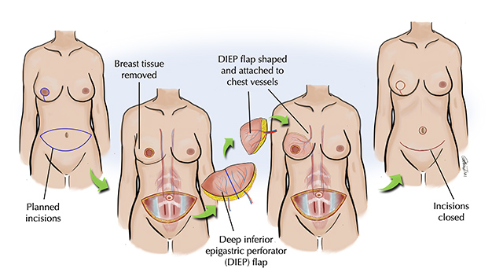


3.9 10 cm kova suoni
Ei tarkempaa kysymyksenasettelua tai vaihtoehtoja. Todennäköisesti kyseessä todettu 10cm pitkä pintalaskimotukos ja kysytty, mitä tehdään.
- Pintalaskimotukos eli tromboflebiitti syntyy tavallisimmin kohjuiseen laskimoon, joka on altistunut mekaaniselle ärsytykselle. Suoneen kehittyy nopeasti akuutti ei-bakteeriperäinen tulehdus, joka saattaa levitä pinnallista päärunkoa myöten jopa safenofemoraaliseen tai safenopopliteaaliseen junktioon ja syvään systeemiin saakka.
- Syvä laskimotukos komplisoi tilannetta lähes 20 %:lla ja keuhkoembolia puolestaan noin 5 %:lla potilaista, taustalla oleva hyytymishäiriö lisää tätä alttiutta. Terveeseen laskimoon spontaanisti kehittyvä migroiva flebiitti on usein paraneoplastinen ilmiö, jonka taustalta voi löytyä maligniteetti tai hematologinen sairaus.
- Tromboflebiitti diagnosoidaan kliinisesti. Havaitaan aristava, punoittava ja kuumottava resistenssi. Mikäli tukos on edennyt reiden yläosaan tai lähelle polvitaivetta, se on selvästi pitkittynyt tai potilaalla on tiedossa oleva hyytymishäiriö, syvä laskimotukos kannattaa sulkea pois ultraäänitutkimuksella.
- Erotusdiagnostiikassa keskeistä on sulkea pois bakteeritulehduksen (ruusu eli erysipelas) mahdollisuus.
- Syvä laskimotukos ja keuhkoembolia ovat pinnallisen laskimotukoksen mahdollisia komplikaatioita. Laaja-alainen tai safeenalaskimoiden tyven seutuun ulottuva tromboflebiitti saattaa edetä syvään laskimoverkostoon tai keuhkoemboliaksi. Epäilyttävissä tapauksissa potilas lähetetään päivystyspoliklinikkaan arvioon.
Akuutin pinnallisen laskimotukoksen hoidossa käytetään oraalisia antikoagulantteja (ensisijainen) tai pienimolekyylistä hepariinia (LMWH).
- Verenohennuslääkitys rajataan tapauksiin, joissa tukos on laaja-alainen tai se on edennyt päärunkoihin, isoon tai lyhyeen kehräslaskimoon yli 5 cm:n matkalle.
- Potilaan 10cm tukoksessa hoito on siis AK-hoito, koska muutos on yli 5cm
- AK-hoidon kesto on 6vk ja annoksena tromboosiprofylaksia-annos (esim Xarelto 10mg 1x1 (ensisijainen) tai jos vuotoriski korostunut niin Eliquis 2,5mg 1x2 tai jos LMWH-hoito on indikoitua (esim. hyytymishäiriö tai aktiivinen syöpäsairaus tai jos on raskaana) niin enoksapariini 40mg 1x1 riippuen potilaan painosta ja munuaistoiminnasta)
- Taudin oireita ja leviämistä kannattaa yrittää lievittää kevyellä lääkinnällisellä hoitosukalla ja anti-inflammatorisilla analgeeteilla. Mikrobilääkettä ei tarvita.
- Laaja-alaisesta pintalaskimotukoksesta tai toistuvista pienemmistäkin tukoksista kärsivä henkilö ohjataan akuuttivaiheen jälkeen erikoissairaanhoitoon, jotta taustalla mahdollisesti oleva laskimovajaatoiminta tulee hoidetuksi. Kajoavaa hoitoa ei suositella akuutissa vaiheessa.
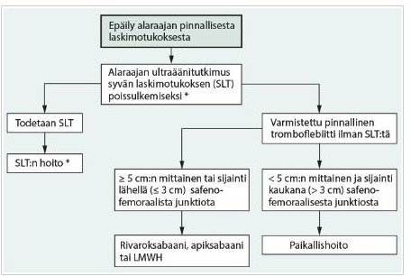
3.10 Kilpirauhasen kysta yli 3 cm, painaa – mikä hoitomuoto?
Ei vaihtoehtoja, mutta koita vastata ilman vinkkejä
Solution.
AspiraatioPaineoireita aiheuttava kysta voidaan tyhjentää aspiraatiolla. Toimenpideradiologi tyhjentää kystan ja täyttää ontelon joko etanolilla/polidokanolilla (pelkän tyhjennyksen jälkeen tilanne uusii todella usein ja nopeasti). Skleroterapia ei tosin poista uusiutumisriskiä. Tarkoitus on hoitaa oireettomaksi, ei hävittää kystaa kokonaan.
Leikkaus voi joskus olla tarpeen, jos kysta oireilee (toistetusta) skleroterapiasta riippumatta jatkuvasti täyttymällä uudestaan. Voidaan koittaa aluksi toimenpiteenä radiofrekvenssiohoitoa. Teho on paras yksilokeroisissa puhtaasti kystisissä muutoksissa: suuret kystat voivat tarvita useampia käsittelyitä.
Kystat ovat hyvin yleisiä. Erilaisia kilpirauhaskyhmyjä on uä:llä tutkittuna ad 75% ihmisistä, naisilla enemmän. Näistä kystisiä on 15-25% ja benignejä 95%.3.11 Mikä on yleisin kilpirauhaskarsinooman tyyppi?
Ei vaihtoehtoja, mutta koita vastata ilman vinkkejä
Solution.
Papillaarinen (80-90%)Syövät jaetaan erilaistuneeseen kilpirauhassyöpään (DTC, differentiated thyroid cancer, papillaarinen ja follikulaarinen karsinooma), medullaariseen ja huonosti erilaistuneeseen anaplastiseen syöpään. Erilaistuneen kilpirauhassyövän tyypillisin alaluokka on papillaarinen karsinooma (PTC). Harvinaisena löydöksenä kilpirauhasessa voidaan todeta lymfooma tai etäpesäke.
PTC (papillary thyroid carcinoma) on tyypillinen nuorilla naisilla (30-40v). Tärkein riskitekijä on ionisoiva säteily. Kasvaa hitaasti, käyttäytyy yleensä varsin ”hyvänlaatuisesti” ja 5v-ennuste >99.5% (joissain lähteissä 97%). Voi levitä kaulan alueen imusolmukkeisiin, mutta etäpesäke ei yleensä heikennä ennustetta kovinkaan paljoa
Joissakin tilanteissa hoidoksi voi riittää pelkästään toisen lohkon poisto (riippuu mm. kasvaimen koosta – ei tarvitse tietää tarkemmin).

3.12 Post barronisaatio
Ei vaihtoehtoja tai tarkempaa kysymyksenasettelua wikissä. Tässä hieman barronisaatiosta:
Barronisaatio viittaa sisäisten peräpukamien hoitokeinoon, jossa peräpukamat hoidetaan ligeeramalla ne kumilenkeillä. Se on nykyään eniten käytetty toimenpide I-III asteen sisäisten pukamien hoitoon. Oireettomia peräpukamia ei tarvitse hoitaa.
- Peräpukamat siis jaetaan sisäisiin ja ulkoisiin sen mukaan ovatko ne lähtöisin linea dentatan yläpuolelta (sisäiset) vai alapuolelta (ulkoiset).
- Linea dentata on tärkeä kohta anaalikanavassa:
- sen yläpuolella laskimoverenkierto kulkeutuu porttilaskimojärjestelmään ja alapuolella systeemiverenkierron puolelle
- alapuolella somaattinen hermotus ja yläpuolella viskeraalinen hermotus
- Koska vasta alapuolella on somaattinen hermotus, niin ulkoiset peräpukamat (linean alapuolella) ovat tyypillisesti kivuliaampia ja sisäiset peräpukamat (linean yläpuolella) ovat tyypillisesti vähemmän kivuliaita
- Linea dentata on tärkeä kohta anaalikanavassa:
- Sisäiset pukamat luokitellaan niiden ulosluiskahtamistaipumuksen mukaan neljään asteeseen:
- Aste 1 = Eivät luiskahda esiin ponnistaessa, mutta voivat vuotaa verta
- Aste 2 = Luiskahtavat esiin ponnistaessa, mutta vetäytyvät spontaanisti peräaukkokanavaan
- Aste 3 = Luiskahtavat esiin ponnistettaessa, mutta ovat työnnettävissä takaisin peräaukkokanavaan
- Aste 4 = Sijaitsevat peräaukon ulkopuolella, eivätkä ole työnnettävissä takaisin peräaukkokanavaan (pysyvästi prolaboitunut)
- Pukamien ulos luiskahtamista voidaan tarkastella pyytämällä potilasta ponnistamaan proktoskooppia ulos vedettäessä
Barronisaatiota ei oikein käytetä ulkoisiin peräpukamiin, koska ulkoisia pukamia hermottaa somaattiset hermot -> ligaatio ja sen aiheuttama kuolio aiheuttaisi massiivista kipua. Ulkoisten peräpukamien ensisijainen toimenpiteellinen hoito on kirurginen poisto (hemorroidektomia), jos kajoavaa hoitoa tarvitaan.
- Jos potilas on kivulias heti peräpukamien ligeeraushoidon jälkeen, on silikonilenkki todennäköisesti liian lähellä iho-limakalvorajaa (linea dentata) ja se kannattaa poistaa katkaisemalla kapeakärkisillä saksilla.
- IV asteen eli pysyvästi ulos luiskahtaneen sisäisen pukaman hoitoon ligeeraus ei myöskään sovellu (leikkaushoitoa suositellaan oireileviin IV asteen ja osaan III asteen peräpukamista), koska ligatuurat eivät riitä vetämään pysyvästi peräaukon ulkopuolelle luiskahtanutta pukamaa takaisin sisään.
Samalla kertaa voidaan ligeerata 3 pukamaa. Hoito voidaan uusia 3–4 kertaa n. kuukauden välein, jos oireisia pukamia on vielä jäljellä (n. 50 %:lle riittää yksi hoitokerta). Jos vaivoja on vielä tämän jälkeen, on harkittava leikkaushoitoa.
- Antikoagulaatiohoitoa ei tarvitse tauottaa peräpukamien barronisaatiota edeltävästi.
- On pieni riski verenvuodolle erityisesti jos käytössä on antikoagulantti, mutta AK-hoitoa ei pääsääntöisesti tarvitse tauottaa. Lenkin irrotessa voi myös tulla vähän verenvuotoa, mutta runsas vuoto on harvinaista.
Mahdollisia komplikaatioita ovat siis mm. lievä verenvuoto ja infektiot sekä kipu. Ei tyypillisesti aiheuta inkontinenssia toisin kuin monet muut operatiiviset hoidot anaalikanavan alueella.
- Ligatuurat eivät yleensä aiheuta sairausloman tarvetta.
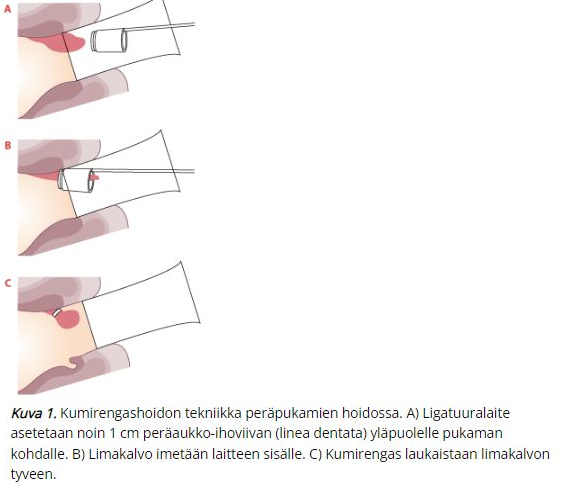 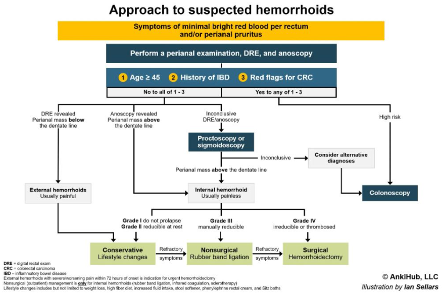
3.13 Bariatric surgery
Ei vaihtoehtoja tai tarkempaa kysymyksenasettelua. Tässä jotain luettavaa:
Lihavuuskirurgiaan eli bariatriseen kirurgiaan sisältyy useita vatsaelinkirurgisia leikkauksia, joiden tavoitteena on vaikeasti lihavan potilaan hyvä ja pysyvä painonlasku pitkäaikaisseurannassa
- Vaikean lihavuuden hoidossa lihavuuskirurgia on ainoa hoitomuoto, jolla osoitetusti voidaan aikaansaada hyvä ja pysyvä painonlasku pitkäaikaisseurannassa
Kirurgista hoitoa harkitaan aina yksilöllisesti, mutta lihavuuskirurgialle on asetettu aiheet ja vasta-aiheet, jotka ovat Käypä Hoitoon kirjoitettuja.
- Leikkaushoidon edellytyksenä on asianmukainen aikaisempi konservatiivinen (ei-kirurginen) hoito
- Käypä hoito -työryhmän harkitsema sovelias konservatiivinen hoito on esimerkiksi seuraava: terveydenhuollon toimintayksikön toteuttama noin 6 kuukauden yksilö-, ryhmä- tai internetpohjainen hoito, joka on johtanut elämäntapamuutoksiin ja noin 5 %:n suuruiseen laihtumiseen mutta jonka tulos ei ole ollut riittävä terveyden kannalta tai jonka jälkeen paino on noussut uudestaan. Kriteerin tarkoituksena on varmistaa potilaan sitoutuminen hoitoon sekä leikkauksen edellyttämiin ruoka- ja liikuntatottumusten muutoksiin. Hoidosta ei saisi olla kulunut yli 5 vuotta.
- 5% muutosta tärkeämpää on kuitenkin se, että potilas on osoittanut pystyvänsä tekemään elintapamuutoksia eikä laihtumistulos ole pelkästään esimerkiksi ENE-dieettiin liittyvä painon väheneminen
- Konservatiivinen hoito toteutetaan ensisijaisesti perusterveydenhuollossa ennen erikoissairaanhoitoon lähettämistä
- Käypä hoito -työryhmän harkitsema sovelias konservatiivinen hoito on esimerkiksi seuraava: terveydenhuollon toimintayksikön toteuttama noin 6 kuukauden yksilö-, ryhmä- tai internetpohjainen hoito, joka on johtanut elämäntapamuutoksiin ja noin 5 %:n suuruiseen laihtumiseen mutta jonka tulos ei ole ollut riittävä terveyden kannalta tai jonka jälkeen paino on noussut uudestaan. Kriteerin tarkoituksena on varmistaa potilaan sitoutuminen hoitoon sekä leikkauksen edellyttämiin ruoka- ja liikuntatottumusten muutoksiin. Hoidosta ei saisi olla kulunut yli 5 vuotta.
Leikkaushoidon painoindeksirajat:
- yli 40 kg/m2 tai
- yli 35 kg/m2 ja potilaalla on lihavuuden liitännäissairaus tai sen vaaratekijöitä, kuten tyypin 2 diabetes, hypertensio, uniapnea, kantavien nivelten nivelrikko, munasarjojen monirakkulatauti (PCOS), tai muu sairaus, jonka voidaan olettaa lievittyvän lihavuusleikkauksella (esim. refluksitauti, kun potilaalle suunnitellaan mahalaukun ohitusleikkausta)
- Maailmalla monessa paikkaa BMI yli 35 on jo leikkausaihe yksinään ilman liitännäissairauksia
- Tyypin 2 diabetesta sairastavalla voidaan lisäksi harkita leikkausta jo painoindeksillä 30–35 kg/m2, jos lihavuuden ja diabeteksen konservatiivinen hoito ei ole tuottanut riittävää tulosta, sillä satunnaistetuissa tutkimuksissa näillä potilailla tulokset ovat olleet vastaavia kuin potilailla, joiden painoindeksi on yli 35 kg/m2
- Painoindeksinä käytetään leikkausharkintaa edeltävää painoindeksiä. Jos potilas laihduttaa tämän jälkeen niin, että painoindeksi on ennen leikkausta pienempi kuin edellä mainitut rajat, leikkaus voidaan tehdä potilaan niin toivoessa
Leikkauksen edellytyksenä on myös, ettei potilaalla ole päihdeongelmaa!
Leikkausmenetelmistä:
Yleisimmät kaksi leikkausmenetelmää ovat mahalaukun ohitusleikkaus (gastric bypass, Roux-en-Y, RYGB) ja mahalaukun kavennusleikkaus (sleeve gastrectomy). Leikkaukset tehdään ensisijaisesti laparoskooppisesti.
- Nämä ovat usein hyvinkin vertailukelpoisia, mutta molemmilla on hyvät ja huonot puolet (taulukossa alimmassa kuvassa)
 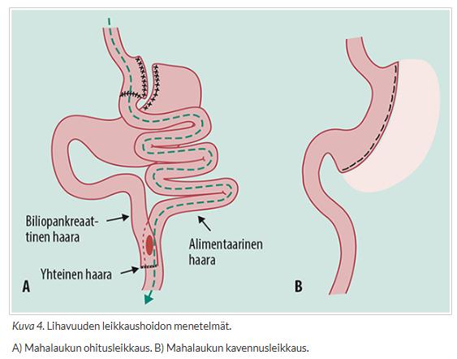
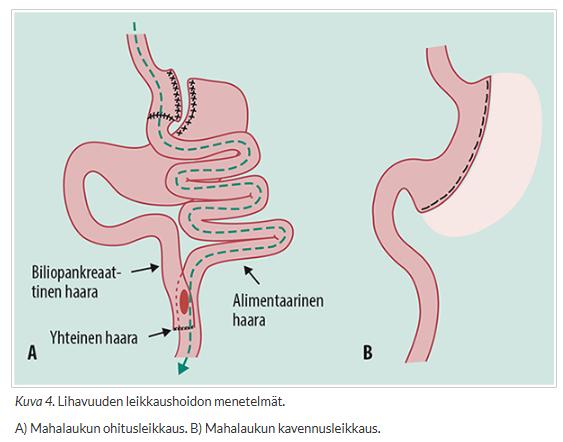

3.14 Crohnin tauti ja leikkaus eli mikä on tehty
Ei vaihtoehtoja wikissä. Tässä pari periaatetta tulehduksellisten suolistosairauksien (IBD) leikkaushoidosta:
Tärkein asia muistaa tulehduksellisten suolistosairauksien kahdesta päätyypistä (Crohnin tauti ja haavainen paksusuolitulehdus eli colitis ulcerosa) on se, että mitä osaa suolistosta ne affisioivat
- Colitis ulcerosa affisioi vain paksusuolta ja vaikuttaa siihen jatkuvaan tyyliin siten, että tauti lähtee rektumista ja voi levitä proksimaalisesti cecumiin asti.
- Crohnin tauti taas voi affisioida koko GI-kanavaa suusta anukseen ja leesio ei ole yhtenäinen, vaan Crohnin taudin ns. “skip-leesioita” voi ilmentyä yhdessä osassa suolta ja sitten pitkän terven suolen osan jälkeen toisessa osassa suolta.
Tämän tärkeän eron takia tautien leikkaushoidon periaatteet eroavat suuresti:
- Koska haavainen koliitti voi affisioida vain paksusuolta, niin taudin kannalta parantava lopputulos saavutetaan, jos koko paksusuoli poistetaan eli potilaalle tehdään proktokolektomia -> ei enää ole paksusuolta, jota tauti voisi affisioida
- Haavaisen koliitin leikkausaiheet jaetaan kolmeen pääryhmään: fulminantti koliitti, krooninen lääkehoitoon huonosti reagoiva koliitti ja koliittiin liittyvä syöpä tai sen esiaste. Krooninen lääkehoitoon reagoimaton koliitti on tavallisin leikkausaihe (65 %).
- Nykyisin selvästi yleisin leikkausmenetelmä on proktokolektomia, johon yhdistetään ileumsäiliö ja ileoanaalinen liitos (IPAA, ileal pouch anal anastomosis). Tavallisimmin käytetty säiliö on J:n muotoinen eli ns. J-pussi. Tarvittaessa leikkauksessa tehdään väliaikainen ohutsuolen lenkkiavanne, joka suojaa tehtyä ileoanaalista liitosta. Avanne suljetaan myöhemmässä leikkauksessa, kun on ensin varmistettu tähystyksellä, että ileoanaaliliitos on parantunut.
- Crohnin taudin leikkaushoidossa minkään suolen osan poisto ei paranna tautia, koska mikä tahansa suoliston osa voi affisioitua -> totaalikolektomiaan ei yleensä edetä (suurentaa riskiä taudin leviämisestä ohutsuolen puolelle) ja pyritään ”suolta säästävään” kirurgiaan (vain affisioitunut suolen osan poisto ja plastiat ahtaumiin)
- Leikkaushoidon indikaatioita ovat pääasiassa taudin komplikaatiot (esim. ahtauma, fisteli, verenvuoto ja anemisoituminen ja tarve jatkuville punasolusiirroille, Crohnin tautiin liittyvä syöpä tai esiaste) ja lääkitykseen reagoimaton tauti. Mahdollisesti kehittyvät perianaalipaiseet avataan välittömästi, mutta muiden Crohnin taudin perianaalimuutosten leikkaushoitoa harkitaan vain, jos ne aiheuttavat potilaalle invalidisoivia oireita. Suolen puhkeama ja siihen liittyvä vatsakalvotulehdus, kuten täydellinen suolitukos, vaativat välitöntä leikkaushoitoa. Leikkauksessa poistetaan sairas suolenosa ja tehdään suoliliitos suolen päiden välille.
- Tavallisin Crohnin taudin ilmentymä on aivan distaalisen sykkyräsuolen (ileum) usein lyhyehkö ahtauma. Niitä esiintyy 75 %:lla sairastuneista. Jos ahtauma aiheuttaa oireita, kuten oksentelua, kouristavia vatsakipuja ja laihtumista, tehdään ileosekaalinen suolentypistys. Suurimmalle osalle potilaista toimenpiteen voi tehdä tähystysleikkauksena.
- Noin kolmasosalla potilaista on tulehdus paksusuolen alueella. Tyypillisimmillään tulehdus on paksusuolen oikealla puolella, mutta se voi olla missä tahansa paksusuolen osassa. Jos Crohnin tauti rajoittuu paksusuolen oikeaan puoleen, voidaan tehdä oikeanpuoleinen paksusuolen typistys. Mikäli tulehtunut alue on laajempi eikä tautia ole peräsuolen alueella, tehdään subtotaali kolektomia ja ileosigmoidaalinen tai ileorektaalinen liitos. Jos myös peräsuolen alueella on vaikea tulehdus, anaalikanava on ahtautunut tai potilaalla on anaalifisteleitä, poistetaan peräsuoli ja peräaukko sekä tehdään pysyvä pääteavanne.
- Diagnoosiltaan selkeässä Crohnin taudissa ei suositella proktokolektomiaa yhdessä ileoanaaliliitoksen kanssa, koska liitosalueella taudin uusiutumisriski on suuri ja noin puolet tehdyistä liitoksista joudutaan myöhemmin purkamaan ja siirtymään pysyvään ileostomiaan.
- Leikkaushoidon indikaatioita ovat pääasiassa taudin komplikaatiot (esim. ahtauma, fisteli, verenvuoto ja anemisoituminen ja tarve jatkuville punasolusiirroille, Crohnin tautiin liittyvä syöpä tai esiaste) ja lääkitykseen reagoimaton tauti. Mahdollisesti kehittyvät perianaalipaiseet avataan välittömästi, mutta muiden Crohnin taudin perianaalimuutosten leikkaushoitoa harkitaan vain, jos ne aiheuttavat potilaalle invalidisoivia oireita. Suolen puhkeama ja siihen liittyvä vatsakalvotulehdus, kuten täydellinen suolitukos, vaativat välitöntä leikkaushoitoa. Leikkauksessa poistetaan sairas suolenosa ja tehdään suoliliitos suolen päiden välille.
Tärkeimmät tiedot siis muistaa IBD-tautien leikkaushoidoista:
- Colitis ulcerosassa leikkaushoito on kuratiivinen (CU affisioi vain paksusuolta), Crohnin taudissa ei (Crohn affisio koko suoliston aluetta)
- Colitis ulcerosan tärkein leikkaustekniikka on IPAA (ileal pouch anal anastomosis) eli proktokolektomia, johon yhdistetään ileumsäiliö (tavallisimmin J-pussi) ja ileoanaalinen liitos
- Crohnin taudissa leikkaushoidon periaate on se, että tarvittaessa leikataan pois vain affisioitunut osa (yleisimmin terminaalinen ileum -> ileosekaalinen typistys) ja ahtaumat laajennetaan (suolta säästävä kirurgia)
- Leikkaushoidon tärkein indikaatio on lääkehoitoon reagoimaton tauti ja komplikaatiot (niin akuutit (esim. suolen puhkeama Crohnissa tai fulminantti koliitti colitis ulcerosassa) kuin krooniset (IBD-liittyvä syöpä tai esiaste, Crohnin taudissa ahtaumat tai fistelit…))
3.15 Anteriorinen resektio tehty, epäilet saumalekaasia. Mikä kuvantamistutkimus paras?
Ei vaihtoehtoja wikissä, mutta samankaltainen kysymys oli jo aikasemmassa tentissä. Koita vastata ilman vinkkejä.
Solution.
TT ja varjoaine p.r.Rektumin tai sigman alaosan lekaasiin eli suolisauman pettämiseen viittaa parhaiten siis se, että per rect annettu vesiliukoinen varjoaine karkaa sauman ulkopuolelle TT-kuvassa. Jos taas lekaasiepäily olisi ylempänä GI-kanavassa (varsinkin ruokatorven/ventrikkelin alueella), niin tutkimus tehtäisiin p.o. varjoaineella. Ohutsuoli ja proksimaalinen paksusuoli ovat hankalampia kuvantaa.
Anteriorinen resektio on tyyppileikkaus peräsuolisyövässä. Toinen tyypillinen leikkaus olisi abdominoperineaalinen resektio (rectumamputaatio). Rectumamputaatiossa tehdään pysyvä avanne, koska peräsuoli ja peräaukko poistetaan täysin.
Peräsuolisyövän leikkaustavan määrittävät kasvaimen sijainti, sen paikallinen levinneisyys ja potilaan kunto. Jos kasvain ei kasva liian lähelle sulkijalihaksia, potilaalle tehdään peräsuolen anteriorinen resektio (poistetaan peräsuoli suoliliepeineen ja tehdään suoliliitos katkaistun paksusuolen pään ja peräsuolityngän välille). Anteriorinen resektio voidaan tehdä avoleikkauksena, laparoskooppisesti tai robottiavusteisesti. Merkittäviä eroja komplikaatioluvuissa ja onkologisissa tuloksissa ei tekniikkojen välillä ole. Jos kasvain kasvaa peräaukon sulkijalihaksiin tai hyvin lähelle niitä, leikkauksessa on poistettava peräsuolen ja suoliliepeen lisäksi peräaukkokanava ja sulkijalihakset ja potilaalle tehdään pysyvä paksusuoliavanne.
Ns. LARS-oireet (Low Anterior Resection Syndrome) ovat yleisiä peräsuolen anteriorisen resektion jälkeen ja näistä yleisimpiä ovat mm. ulostamisfrekvenssin nousu, ulostamispakko (urge), pidätyskyvyn ongelmat (ulosteinkontinenssi), virtsaamisen ongelmat ja erektio-ongelmat.

3.16 Laskimovajaatoiminnan riskitekijät
Ei vaihtoehtoja wikissä, tässä tärkeimpiä riskitekijöitä:
- Naissukupuoli
- Raskaudet
- Ylipaino
- Sukurasitus
- Sairastettu syvä laskimotukos
Hyvä huomata, että tupakointia ei tyypillisesti mainita tässä. Tupakointi ei siis tyypillisesti affisioi laskimopuolta niin paljoa kuin valtimopuolta ja se ei ole kovinkaan tärkeä riskitekijä laskimovajaatoiminnan suhteen (joidenkin lähteiden mukaan ei lisäisi riskiä ollenkaan).
3.17 Hb 82, melena, ei verioksennusta. Missä vuoto todennäköisimmin?
Ei vaihtoehtoja wikissä, mutta koita vastata ilman vinkkejä.
Solution.
Ylä-GI, tavallisimmin mahalaukun/duodenumin ulkusAkuutin suolistoverenvuodon oireita ovat verioksennus (hematemeesi), meleena eli tumma veriuloste, kirkas verenvuoto peräsuolesta (hemorrhagia ex ano), kollapsi tai anemisoituminen. Meleena on useimmiten lähtöisin ylä-GI-kanavasta ja hemorrhagia ex ano ala-GI-kanavasta.
Noin 80–90 % ruoansulatuskanavan verenvuodoista on peräisin ruoansulatuskanavan yläosasta (Treitzin ligamentin yläpuolelta), 1–5 % ohutsuolesta ja 15 % paksu- ja peräsuolesta.

3.18 Potilastapaus
Kysymys todennäköisesti ollut jo 2022, mutta wikissä kirjoitettu vain aihe ylös. Tämä potilastapausteksti on vuoden 2024 tentistä, jossa todennäköisesti on taas kysytty sama kysymys kuin aiemmin.
60-vuotias alkotaustainen mies päivystykseen, 40 astetta kuumetta, oikean kyljen kipu, yskä, saturoituu huoneilmalla 92-94, CRP 240, thx-rtg:ssä oikean puolen diffuusi pneumonia ja pleurassa runsaasti nestettä, mikä ensilinjan diagnoosi ja hoito?
- pneumonia ja laajakirjoinen ab, CPAP
- empyeema, pleuradreeni, laajakirjoinen ab
- joku (ei wikissä)
Solution.
bEmpyeema (keuhkopussin märkäkertymä) on usein pneumonian komplikaatio (muita aiheuttajia esim. maligniteetti, keuhkoabskessin rupturoituminen, esofagusruptuura, pneumothorax, hemothorax, leikkauskomplikaatio tai subfreeninen abskessi) ja sen esiintyvyys on kasvussa erityisesti päihdeongelmaisilla.
Empyeeman tyypillisiä oireita ovat korkea kuume, hengitysvaikeudet, kipu kyljessä. Yleisesti siis potilas on todella sairas ja kun empyeema on klassisesti pneumonian komplikaatio, niin tyypillistä tilalle on, että pneumoniapotilaan vointi heikkenee antibioottihoidosta huolimatta.
Empyeema diagnosoidaan thoraxkuvalla, mutta TT antaa tarkemman kuvan taudin syystä, tulehdusontelon laajuudesta sekä lokeroisuudesta. Ultraäänitutkimuksesta on eniten hyötyä diagnostisen punktion kohdentamisessa. Diagnostiikassa voidaan kuitenkin hyödyntää nesteen valkosolumääriä, happamuutta sekä glukoosi- että laktaattidehydrogenaasipitoisuutta. Viljelyvastaus ohjaa mikrobilääkehoitoa.
Empyeeman hoidon perusideologiana on tehokas mikrobilääkehoito (keskimäärin kestää n. 3 viikkoa) ja märkäkertymien dreneeraus. Dreneerausmenetelmän valintaan vaikuttavat taudin etiologia, vaikeusaste (kertymien laajuus ja lokeroisuus), potilaan yleistila ja pitkäaikaissairaudet sekä keuhkon infektiotilanne ja mahdollinen fisteli keuhkosta keuhkopussiin. Empyeeman eksudativisessa vaiheessa pleuraan (keuhkopussi) kertyvä neste on dreneerattavissa päivittäisillä kaikuohjatuilla punktioilla. Usein päädytään kuitenkin jo varhaisvaiheessa pleuradreenin asettamiseen.
Jos pleura ei tyhjene dreenillä -> heti leikkaus. Samoin jos mikrobilääkityksellä ja dreneerauksella tauti ei osoita paranemisen merkkejä, niin leikkaukseen tulisi edetä viimeistään viikossa. Ensisijaisesti kirurginen hoito tulisi toteuttaa tähystysleikkauksena (pidemmälle edennyt avoleikkauksena). Leikkaushoidon tavoitteena on tyhjentää märkä ja kuoria paksu fibriini keuhkon päältä (eli dekortikaatio)– > jos keuhko ei laajene, tyhjä tila täyttyy herkästi mädällä. Empyeemapotilaista noin puolet tarvitsee kirurgista hoitoa.3.19 Munuaissyövät
Ei tarkempaa kysymyksenasettelua tai vaihtoehtoja, vain aihe kirjoitettu. Tässä hieman munuaissyövistä:
Munuaissyövät ovat yleensä oireettomia ja suurin osa löytyy sattumalta vatsan kuvantamistutkimuksissa
- Mahdollisia oireita ovat kuitenkin selkä- ja kylkikipu, hematuria, metastaasien oireet, yleisoireet; hypersedimentaatio, anemia ja mikroskooppinen verivirtsaisuus ovat tavallisia löydöksiä
- Kaikukuvaus on suositeltavin seulontatutkimus epäiltäessä munuaissyöpää. Laboratoriotutkimukset: La, PVKT, Krea, AFOS ja U-KemSeul. Kasvainlöydös varmistetaan tavallisesti vartalon varjoainetehosteisella tietokonetomografialla (TT). Histologinen varmistus biopsialla tulee ottaa aina ennen ablatiivisen (radiofrekvenssi- tai kryoablaatio) tai onkologisen hoidon aloitusta. Kudosnäytteiden ottaminen munuaiskasvaimista on yleistynyt, koska ennustetta sekä mahdollisen leikkauksen tai muun hoidon hyötyjä ja haittoja joudutaan punnitsemaan yhä tarkemmin.
- Munuaissyöpä syntyy tubulusepiteelin solujen muuttuessa kumuloituvien geenimutaatioiden kautta pahanlaatuisiksi. Munuaissyövän tärkeimmät histologiset alatyypit ovat kirkassoluinen karsinooma (75 %), papillaarinen karsinooma (10 %) ja kromofobinen karsinooma (5 %)
- Kaikukuvaus on suositeltavin seulontatutkimus epäiltäessä munuaissyöpää. Laboratoriotutkimukset: La, PVKT, Krea, AFOS ja U-KemSeul. Kasvainlöydös varmistetaan tavallisesti vartalon varjoainetehosteisella tietokonetomografialla (TT). Histologinen varmistus biopsialla tulee ottaa aina ennen ablatiivisen (radiofrekvenssi- tai kryoablaatio) tai onkologisen hoidon aloitusta. Kudosnäytteiden ottaminen munuaiskasvaimista on yleistynyt, koska ennustetta sekä mahdollisen leikkauksen tai muun hoidon hyötyjä ja haittoja joudutaan punnitsemaan yhä tarkemmin.
Tärkein riskitekijä on tupakointi. Muita riskitekijöitä ovat lihavuus ja korkea verenpaine. Myös perinnöllisillä tekijöillä on vaikutusta.
Ainoa munuaissyövän kuratiivinen hoito on leikkaus, jossa poistetaan joko koko munuainen (nefrektomia) tai osa munuaista (resektio). Resektio tehdään jos on mahdollista, ja nykyisin valtaosa tehdään robottiavusteisesti laparoskooppisesti.
- Munuaissyövän työntyminen munuaislaskimoon ja alaonttolaskimoon ei ole leikkausten vasta-aihe vaan tuumoritapin poistaminen laskimosta kannattaa.
Kaikkia pieniä (< 4 cm) munuaiskasvaimia ei tarvitse hoitaa erityisesti, jos potilas on iäkäs ja muita sairauksia on jo kertynyt merkittävästi.
- Pienen, paikallisen (T1a) munuaiskasvaimen ennuste on vanhuksilla hyvä, kasvunopeus on yleensä hidas ja taudin leviämisen riski pieni.
- Jos munuaissyöpä on ollut kooltaan pieni (alle 4 cm) ja paikallinen (T1), viiden vuoden kuluttua elossa on yli 90 % radikaalisti leikatuista potilasta.
- Lisäksi kajoaviin toimenpiteisiin liittyy haittoja, kuten munuaisten vajaatoiminnan kehittyminen ja siitä seuraava sydän- ja verisuonitautiriskin suureneminen sekä leikkauskomplikaatioiden mahdollisuus.
- Aktiivinen seuranta on hyväksytty vaihtoehto valikoiduille potilaille. Jos leikkausta ei voi tehdä, mutta päädytään kuitenkin aktiiviseen hoitoon, sopivassa paikassa sijaitsevia pieniä munuaiskasvaimia voi tuhota ihon kautta radiologisessa ohjauksessa tapahtuvalla ablaatiolla (radiotaajuus-, mikroaalto-, laser- ja kryoablaatio).
- Hyvin pienten, noin senttimetrin kokoisten munuaiskasvainten kohdalla voidaan aluksi suositella seurantaa myös nuorten ja hyväkuntoisten potilaiden kohdalla, jolloin vältetään epäselvien ja merkityksettömien muutosten turha leikkaushoito.
- Toteamisvaiheessa metastasoineen syövän hoito on palliatiivinen: munuaisen poisto ja/tai lääkehoidot. Pienen ja keskisuuren riskin metastasoineessa syövässä käytetään munuaisen poiston ja lääkehoidon yhdistelmää, mutta suuren riskin metastasoineessa syövässä munuaisen poistosta ei ole hyötyä.

3.20 Vatsa-aortan aneurysmat – miten oireilee? +hoito
Ei vaihtoehtoja wikissä, mutta tässä tärkeimmät:
Vatsa-aortan aneurysma (AAA) on lähes aina oireeton, kunnes se rupturoituu (jonka oireita on taas mm. äkillisesti alkanut voimakas vatsakipu, joka säteilee selkään ja joskus kylkeen/nivustaipeisiin…, hypotensio, synkopee yms). Joskus AAA voi kuitenkin aiheuttaa kompressio-oireita ja kipua.
- Laskimokompressiosta voi aiheutua turvotus ja/tai syvän laskimon tukos alaraajoissa sekä hydronefroosi (virtsajohtimen kompressio)
- Jos aneurysma kipuilee, sen katsotaan olevan merkki repeämisvaarasta
- Iso aneurysma on usein helposti palpoitavissa sykkivänä resistenssinä vatsaa tunnusteltaessa
Vatsa-aortan aneurysman hoito on ensisijaisesti tilanteen seuranta ja riskitekijöiden hoito, joka sisältää tupakoinnin lopettamisen, asetyylisalisyylihappo- tai klopidogreelilääkityksen, verenpaineen hoidon ja statiinilääkityksen. Seuranta toteutetaan ensisijaisesti terveyskeskuksessa UÄ-tutkimuksella, joka suoritetaan
- 3 vuoden välein jos aneurysman koko on 30-35 mm
- 2 vuoden välein jos aneurysman koko on 36-40 mm
- 1 vuoden (3-12kk) välein jos aneurysman koko on >40 mm
Jos koko > 50 mm, niin lähete vkir (naisilla 45 mm) ja aneurysma mahdollisesti hoidetaan operatiivisesti. Käytännön toimenpiderajaksi on asetettu 55 mm miehillä (50 mm naisilla), sillä tätä pienemmät aneurysmat repeävät harvoin.
- Hoitovaihtoehdot:
- Suonensisäisen stenttiproteesin (EVAR, endovascular aneurysm repair) asentaminen on nykyään ensisijainen AAAn hoito, sillä sen aiheuttama välitön riski potilaalle on pienempi, erityisesti revenneen AAAn osalta
- Osa aneurysmista avoleikataan
- Hoitomuodon valintaan vaikuttavat potilaan elinajan ennuste (nuoremmat voidaan avoleikata useammin), yleistila sekä aneurysman muoto ja sijainti suhteessa aortan valtimohaaroihin
- Avoleikkaus (Y-proteesi) ei vaadi jatkoseurantaa, koska myöhäiskomplikaatiot avoleikkauksen jälkeen ovat harvinaisia. Akuutimmat komplikaatiot taas yleisempiä ja toimenpiteeseen liittyvä kuolleisuus on n. 3-4 % kirjallisuuden mukaan. Kuitenkin on hyvä pitkäaikaisennuste jos akuutista vaiheesta selviää -> nuorempia potilaita leikataan enemmän Y-proteesilla kuin vanhoja potilaita.
- Y-protetisaatiossa voi ilmentyä komplikaationa esim. proteesi-infektio tai aortoenteerinen disteli, jossa on fisteli Y-proteesisauman ja suolen välillä. Ovat vakavia mutta harvinaisia komplikaatiota, joiden hoitoon liittyy merkittävä sairastuvuus ja kuolleisuus.
- EVAR:n kanssa taas on enemmän myöhäiskomplikaatioita, jonka takia EVAR vaatii loppuiän seurantaa. Komplikaatiot liittyvät yleisimmin niin sanottuun endoleakiin (EL) eli siihen, että aneurysmasäkki paineistuu ja sinne pääsee verenkiertoa. Mikäli endoleak aiheuttaa merkittävää aneurysmasäkin kasvua, se pitää hoitaa. Yleensä hoito on suonensisäinen lisätoimenpide, mutta joskus joudutaan tekemään konversio eli stenttiproteesin poisto ja aortan korjaus avoimesti proteesilla.
- Avoleikkaus (Y-proteesi) ei vaadi jatkoseurantaa, koska myöhäiskomplikaatiot avoleikkauksen jälkeen ovat harvinaisia. Akuutimmat komplikaatiot taas yleisempiä ja toimenpiteeseen liittyvä kuolleisuus on n. 3-4 % kirjallisuuden mukaan. Kuitenkin on hyvä pitkäaikaisennuste jos akuutista vaiheesta selviää -> nuorempia potilaita leikataan enemmän Y-proteesilla kuin vanhoja potilaita.
3.21 Ihosyövät
Ei tarkempaa kysymyksenasettelua tai vaihtoehtoja wikissä, ja kyseessä on aika laaja aihealue. Tässä nyt joitain pieniä hippuja ihosyöpien jaottelusta yms:
Ihosyöpä on yleisin syöpätyyppi, mutta vain 1% syöpäkuolemista johtuu ihosyövistä
- Tärkein ulkoinen riskitekijä on runsas elinaikainen altistuminen auringon UV-säteilylle sekä useat ihon palamiskerrat. Ihosyöpää voi ilmentyä lapsilla ja tummaihoisillakin.
- Riskiä lisää myös aikaisemmin sairastettu ihosyöpä itsellä tai lähisukulaisella.
Tärkeimmät tyypit ovat melanooma ja ei-melanoottiset syövät kuten basaliooma (tyvisolusyöpä) ja okasolusyöpä (levyepiteelisyöpä). Basaliooma on yleisin ihosyöpä, sen jälkeen okasolusyöpä ja melanooma
- Tosin Syöpärekisterin mukaan toiseksi yleisin vallitsevuuden perusteella on melanooma ja sen jälkeen okasolusyöpä, mutta ilmaantuvuudessa ne ovat tasoissa (v. 2018 melanoomaa 1658 kpl ja okasolusyöpää 1700 kpl)
3.22 Gastroskopiat
Ei tarkempaa kysymyksenasettelua tai vaihtoehtoja wikissä. Tärkeimmät asiat tietää gastroskopioista on tutkimuksen indikaatiot. Vasta-aiheita ovat kompensoimaton sydämen vajaatoiminta ja vaikea keuhkosairaus. Tuore sydäninfarkti on suhteellinen vasta-aihe, vaikka endoskopia aiheuttaa harvoin iskemiaa hemodynaamisesti vakaassa tilanteessa. Raskaus ei ole gastroskopian vasta-aihe.

3.23 Mahahaava ja maligniteetit
Peptisen ulkustaudin hoidon onnistuminen tarvitsee varmentaa gastroskopialla, jos kyseessä on ollut ventrikkeliulkus
- Ventrikkeliulkuspotilaalla PPI-lääkitystä jatketaan, kunnes haavan parantuminen on varmistettu ja koepaloin todettu, ettei kyseessä ole maligniteetti
- Yleensä gastroskopialla kontrolli 2-3kk kohdalla, varmistetaan ettei haavan taustalla ole karsinoomaa tai esiasteita
- Jos tähystyksessä Forrest I haava (suihkuvuoto tai valuva vuoto; indikaatio endoskooppiselle hoidolle), niin yleensä kontrollitähystys saman osastojakson aikana
Duodenaaliulkuksien taustalla ei käytännössä koskaan ole malignisoitumisriskiä -> ei tarvetta kontrollitähystyksille
- Mahdollisen H. pylorin häätöhoidon onnistuminen kuitenkin varmistetaan avohoidossa ulostetestillä (huom! vasta-ainemääritys ei sovellu hoidon onnistumisen seurantaan); Ennen kontrollinäytettä on muistettava vähintään 2 viikon PPI-tauko
3.24 Milloin sarkoomaa kannattaa epäillä
Ei vaihtoehtoja wikissä, mutta tässä tärkeimmät:
Sarkoomat jaetaan pehmytkudossarkoomiin ja luusarkoomiin, joiden käyttäytyminen ja hoitoperiaatteet eroavat toisistaan
- Todennäköisesti tässä on tarkoitettu nyt pehmytkudossarkoomia, kuten liposarkoomat, erilaistumaton pleomorfinen sarkooma, leiomyosarkooma…
- Ovat harvinaisia ja todetaan Suomessa n. 220 vuodessa
- Todetaan kaikenikäisillä
Sarkooma voi sijaita pinnallisesti raajoissa tai vartalolla tai syvemmällä retroperitoneaali- tai peritoneaalitilassa
Pehmytkudossarkooma on yleensä oireeton kyhmy, joka kasvaa. Yleisoireita on harvoin. Sarkoomaa on epäiltävä erityisesti, jos kasvava kyhmy on atraumaattinen, lihaskalvon alla, alustaansa kiinnittynyt, kova ja/tai yli 5 cm:n läpimittainen
UÄ voi näyttää hematoomalta ja potilas tulee lähettää jatkotutkimuksiin, jos se ei vastaa kliinistä löydöstä.
Pehmytkudossarkooman epäilyn herättyä potilas tulee ohjata yliopistosairaalan sarkoomatyöryhmän konsultaatioon
3.25 Sarkoomaepäily, mitä tehdään tk:ssa?
- stanssibiopsia
- poistan koko muutoksen PAD-näytteeksi
- sarkoomaepäilyssä ei koskaan saa ottaa näytettä tk:ssa
- joku (ei wikissä)
Solution.
c
Älä koskaan ota neulanäytettä/stanssibiopsiaa/poistoa patista, joka uä:n tai kliinisen tutkimuksen mukaan voisi ehkä mahdollisesti olla sarkooma. Sarkoomaepäilyt lähetetään ESH, jossa MRI ja sen perusteella kohdennetaan paksuneulabiopsia.

3.26 Sarkooma on
- aina lihaksesta peräisin
- yleensä perinnöllinen
- yleensä traumaperäinen
- yleensä syvällä
Solution.
d
a: Sarkoomat eivät ole aina lihaksesta peräisin (myo- tai leiomyosarkoomia). Yleisin yksittäinen pehmytkudossarkooma on liposarkooma ja leiomyosarkooma eli sileän lihaksen sarkooma on toiseksi yleisin.
b: Vain pieni osa (noin 5-10 %) liittyy perinnöllisiin syndroomiin (esim. Li-Fraumenin oireyhtymä tai tyypin 1 neurofibromatoosi) ja valtaosa on sporadisia.
c: Trauma ei aiheuta sarkoomaa, vaikka potilas joskus tulee lääkäriin trauman jälkeen huomatun patin vuoksi, joka voi olla pehmytkudosvauriosta johtuvaa tai trauma on voinut tuoda huomiota aikaisemmin jo paikalla olleeseen sarkoomaan.
d: Totta. Sarkoomat tyypillisimmin kasvavat syvän faskian alapuolella eivätkä suoraan ihon alla.
3.27 Lymfakierron ongelmien etiologia
Ei vaihtoehtoja, mutta tässä tärkeimmät:
Imunestekierto kuljettaa nesteitä ja isoja molekyylejä kudoksista verenkiertoon ja imusolmukkeisiin. Lymfakierron estyminen syystä tai toisesta johtaa lymfaturvotukseen eli lymfedeemaan kudoksessa, josta nestettä ei saada kierrätettyä ulos. Se johtaa ensin imunesteen ja myöhemmässä vaiheessa side- ja rasvakudoksen kertymiseen oireiseen raajaan.
- Syy voi olla primaarinen (geneettinen, esim. Milroyn tauti tai Meigen tauti) tai sekundaarinen (paljon yleisempi)
- Yleisin sekundaarinen syy (ainakin länsimaissa) on imusolmukkeiden poisto ja/tai sädehoito syövän hoidon yhteydessä. Yleisin potilasryhmä ovat kainaloon levinneen rintasyövän vuoksi hoidetut potilaat.
- Rintasyöpäpotilaista, joille on tehty kainalon imusolmukkeiden poisto, 20–40 prosentille kehittyy yläraajan imunesteturvotus. Vartijaimusolmukkeen poiston jälkeisen imunesteturvotuksen riski on 4–10 %. Leikkauksen jälkeinen sädehoito suurentaa imunesteturvotuksen riskiä. Rintasyöpään liittyvä imunesteturvotus kehittyy tavallisimmin parin ensimmäisen vuoden aikana, mutta se voi ilmaantua myös vuosien viiveellä.
- Alaraajan imunesteturvotukselle altistavat erityisesti gynekologisten ja urologisten syöpien sekä melanooman vuoksi tehty lantion ja/tai nivusalueen imusolmukkeiden poisto ja sädehoito. Myös muiden syöpien kuten sarkooman hoidon seurauksena voi kehittyä imunesteturvotus.
- Kehitysmaissa (ja siten maailmanlaajuisesti) yleisin syy on filariaasi eli rihmamadon (tavallisimmin Wuchereria bancrofti) aiheuttama parasiitti-infektio imuteissä. Maailman terveysjärjestön WHO:n tehokkaan lääkehoitokampanjan myötä infektioiden määrä on saatu viime vuosina selvään laskuun.
Myös mm. trauma ja ylipaino voivat olla sekundaarisen lymfedeeman taustalla.
3.28 ERCP komplikaatiot
Ei vaihtoehtoja, mutta tässä tärkeimmät:
ERCP:hen liittyviä komplikaatioita ovat
- haimatulehdus (2-5%, joissain lähteissä 3,5–9,7 %)
- kolangiitti (1 %)
- sfinkterotomian jälkeinen verenvuoto (1 %)
- tiehyen tai suolen puhkeama (alle 1 %)
ERCP eli endoskooppinen retrogradinen kolangiopankreatografia on toimenpide, jossa sivulle katsovalla duodenoskoopilla voidaan tutkia ja hoitaa sappi- ja haimatiehyen sairauksia läpivalaisulaitteen avulla. ERCP tulee kohdentaa potilaille, joille on tarkoitus tehdä samalla jokin hoidollinen toimenpide. Diagnostisena tutkimuksena ERC:ta käytetään sklerosoivan kolangiitin etenemisen seurannassa kuvauslöydöksen ja harjairtosolunäytteiden avulla.


3.29 Laskimoiden termoablaatio
Ei vaihtoehtoja, mutta tässä tärkeimmät termoablaatiosta:
Laskimovajaatoiminnan kajoavan hoidon vaihtoehtoja ovat EVTA (termoablaatio), UGFS (sleroterapia; sekundaarinen, jos termoablaatio ei ole teknisesti mahdollinen esimerkiksi hoidettavan laskimon mutkaisuuden takia) tai avokirurgia (viimeinen vaihtoehto jos edellä mainitut eivät sovi)
- EVTA (endovascular thermal ablation) on nykyään ensisijainen kajoava hoitomenetelmä pinnallisen laskimopäärungon vajaatoiminnassa ja on käytännössä korvannut avokirurgian. Se voidaan suorittaa laserablaationa (EVLA, endovenous laser ablation) tai radiotaajuusablaationa (FRA, radiofrequency segmental thermal ablation, rf-tekniikka eli radiofrekvenssitekniikka). Ensisijaisena näistä voidaan pitää laserablaatiota.
Termoablaatiossa hoidettava laskimo (useimmiten vena saphena magna tai parva) punktoidaan ja laserkuitu uitetaan sisään. Se viedään vajaatoimintamuutosten läpi proksimaaliselle puolelle safenofemoraalisen tai safenopopliteaalisen junktion distaalipuolelle pitäen turvamarginaalin syvään laskimoon. Hoidettavan laskimon ympärille injisoidaan puudutus. Peruutellessa ulos laseroidaan suonta, mikä johtaa laskimon endoteelin vaurioon ja johtaa pintalaskimon fibrotisoitumiseen kiinni, jolloin se ei enää voi aiheuttaa vajaatoiminta-oireita.
- Merkittävä osa termoablaatioista voidaan toteuttaa poliklinikkaoloissa. Erityistä jälkiseurantaa ei tarvita, ja potilas voi mobilisoitua heti.
- Komplikaatiot ovat harvinaisia ja tärkein tiedostaa on syvä laskimotukos, jonka takia hoito on vasta-aiheinen raskaana oleville, aktiivisen pintalaskimotukoksen aikana ja syvien laskimoiden obstruktiossa sekä niille, joilla on avoin foramen ovale (mahdollisuus paradoksiselle embolialle, kun laskimotrombi pääsee avoimen foramen ovalen kautta vasempaan eteiseen ja valtimoverenkiertoon).
Toimenpiteen jälkeinen pintalaskimotukos hoidetulla alueella on normaalilöydös eikä komplikaatio (suonihan on tarkoituksellisesti tukittu ja post-ablatiivisesti pinnallinen tromboflebiitti on odotettu ja tavallinen löydös 1-2 vk kuluttua laserablaatiosta tai vaahdotuksesta) – hoitamattomassa suonessa kohdellaan kuten pintalaskimotukos yleensä.
- Hoidetun suonen alueella voidaan myös usein todeta suonen kulkua myötäilevä pigmentaatiomuutos koska lämpö voi vaikuttaa ihon alla oleviin verisuoniin ja pigmenttisoluihin. Nämä värimuutokset ovat yleensä vaarattomia, mutta voivat olla pysyviä, joka tulee pitää mielessä, jos suonikohjuja lähdetään korjaamaan vain esteettisistä syistä (esteettinen ongelma voi siis vain muuttua toisenlaiseksi luonteeltaan).

3.30 Laskimovajaatoiminnan hoitoindikaatiot
Käyty jo läpi aikaisemmissa tärpeissä, mutta koita nyt taas tuoda indikaatiot (sekä konservatiiviselle että operatiiviselle) mieleesi ilman vinkkejä
Solution.
Alla
Oireetonta laskimovajaatoimintaa ei sinänsä tarvitse hoitaa konservatiivisestikaan. Jos potilas kokee oireita, mutta ei vielä täytä kajoavan hoidon kriteerejä, niin hoito on pääasiassa vain kompressiohoitoa (paljon mitään muuta ei voida tehdä). Kompressiohoito ei kuitenkaan näytä estävän suonikohjuja pahenemasta, mutta se vähentää laskimovajaatoiminnan oireita ja hyödyttää monia potilaita. Kompressiohoidolla on kuitenkin heikko hoitomyöntyvyys. Komplisoituneessa taudissa kompressiohoito on kuitenkin äärimmäisen tärkeä ja siitä on hyötyä laskimohaavojen hoidossa ja ehkäisyssä.
Kajoavan hoidon indikaatiot ovat seuraavat: komplisoitunut tauti (C4-C6), toistuvat pintalaskimotukokset/laaja pintalaskimotukos, vuotavat suonikohjut tai merkittävää haittaa aiheuttava komplisoitumaton tauti (kunhan BMI <35). Merkittävä haitta tarkoittaa haittaluokkaa 2-3 (potilas ei pysty työskentelemään ilman kompressiohoitoa tai ei pysty työskentelemään siitä huolimatta).
 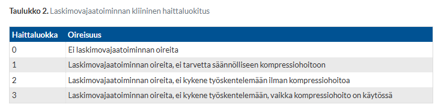
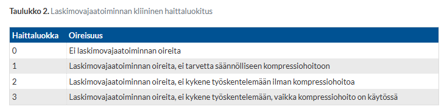
3.31 Ulcusperforaatio
Ei vaihtoehtoja tai kysymyksenasettelua wikissä. Tässä tärkeimmät:
Toiseksi yleisin peptisen ulkustaudin komplikaatio on perforaatio (yleisin komplikaatio on ulkusvuoto n. 20-25% potilaista). On arvioitu, että 5–10 %:lle ulkuspotilaista kehittyy jossain vaiheessa ulkusperforaatio.
- Ulkuspotilaalle (tai potilaalle, jolla epäilet olevan taustalla ulkus) ilmestyvä äkillinen kova vatsakipu viittaa ulkuksen perforaatioon. Suurimmalla osalla ulkusperforaatiopotilaista on ollut aikaisemmin ulkus tai ainakin ulkustyyppisiä vaivoja, mutta noin 10 %:lla potilaista ulkusperforaatio tapahtuu ulkustaudin ensimmäisenä kliinisenä manifestaationa.
- Kipu on luonteeltaan jatkuvaa, erittäin voimakasta. Se tuntuu aluksi epigastriumissa tai oikean kylkikaaren alla, mutta leviää nopeasti koko vatsan alueelle. Myös hartiakipua saattaa esiintyä merkkinä palleaärsytyksestä (Kehrin oire)
Ulkusperforaatiossa todetaan vapaata ilmaa vatsan TT:ssä (kuten muutenkin suoliperforaatiossa). Ulkusperforaatio on tavallisin pneumoperitoneumin aiheuttaja. Perforaatio sijaitsee tavallisimmin bulbus duodenin alueella (35–65 %) ja toiseksi yleisimmin pyloruksessa (25–45 %). Perforaatioista 5–25 % sijaitsee muualla ventrikkelissä.
Hoidossa on olennaisinta varhainen diagnoosi, jonka jälkeen aloitetaan kiireellisesti laajakirjoinen mikrobilääkehoito sekä nesteresuskitaatio. Itse hoito on päivystyksellinen leikkaus
- Leikkaukseksi riittää lähes aina vatsaontelon huuhtelu ja yksinkertainen perforaation sulku knoppiompeleiden ja omenttipedikkelin kanssa tai ilman sitä. Alle 10 % potilaista tarvitsee ventrikkeliresektiota. Leikkauksen yhteydessä ventrikkeliulkuksesta otetaan histologinen näyte, sillä mahasyöpä voi joskus tulla ilmi ulkusperforaation muodossa. Ventrikkeliulkuksen tapauksessa tulee myös tehdä kontrolligastroskopia maligniteettiriskin takia.
- Laparoskooppinen kirurgia on yleistynyt, ja sen etuna on leikkauksen jälkeisen kipulääkityksen vähäisempi tarve, vähäisempi kuolleisuus ja komplikaatioriski sekä lyhyempi sairaalassaoloaika. Toisaalta laparoskooppisella tekniikalla tehtyjen leikkausten kesto on pitempi verrattuna avoleikkauksiin.
3.32 Haimatulehduksen vaikeus, mikä korreloi?
- Amylaasi
- Haimaperäinen amylaasi
- Lipaasi
- CRP
Solution.
d
Yksittäisistä laboratoriokokeista paras ennustearvo on C-reaktiivisella proteiinilla (CRP). Sairaalaan tulovaiheessa CRP >150 mg/l ennustaa hyvin mahdollista vaikeampaa akuutin pankreatiitin taudinkuvaa.
Myös suuri hematokriitti- ja kreatiniinipitoisuus sekä huono diureesi ovat varoitusmerkkejä siitä, että potilaalle on kehittymässä vaikea akuutti pankreatiitti (AP). Hematokriitti kuvastaa third-spacingia hyvin (nestemenetys systeemisen tulehduksen takia -> hematokriitti nousee)
Vaikea AP = elinvaurio >48h
a,b,c: Amylaasi tai lipaasi ei korreloi vaikeusasteen kanssa

3.33 Mikä leikkaus tehdään, kun potilaalla todetaan divertikkeliperforaatio ja fekaaliperitoniitti?
Ei vaihtoehtoja, mutta koita vastata ilman vinkkejä
Solution.
Hartmannin toimenpideDivertikuliitin vaarallisin komplikaatio on peritoniitti, joka syntyy, kun suoli puhkeaa vatsaonteloon ja keho ei pysty rajaamaan sitä paiseeksi. Potilaat, joilla on peritoniitti, kuuluu hoitaa operatiivisesti; leikkauksessa vatsaontelo huuhdellaan puhtaaksi eritteestä ja poistetaan sairastunut ja puhjennut suolen osa, jonka jälkeen proksimaalinen paksusuolen pää tuodaan avanteeksi ihon pinnalle (Hartmanin leikkaus päivystyksenä).
Peräsuoli jää paikalleen ja suolen päiden yhdistäminen myöhemmin (tyypillisesti aikaisintaan puolen vuoden päästä) on usein mahdollista, kun potilas on toipunut päivystysleikkauksesta.


3.34 Raskaaksi haluava nainen ja hyperparatyreoosi
Ei vaihtoehtoja, mutta todennäköisesti kysytty, että miten potilasta tulisi hoitaa:
Paratyreoidektomia ei ole vasta-aiheinen primaarin hyperparatyreoosin (PHPT) hoitokeino, jos potilas suunnittelee raskautta; se on oikeastaan leikkausindikaatio!
Yleisimmät hyperkalsemian syyt ovat primaarinen hyperparatyreoosi (PHPT) tai maligniteetti (ja siten paraneoplastinen PTHrP-välitteinen hyperkalsemia tai hyperkalsemia johtuen osteolyyttisistä metastaaseista tai myeloomasta), jotka yhdessä muodostavat noin 90 % tapauksista. Hyperkalsemian yleisin yksittäinen syy on primaarinen hyperparatyreoosi (PHPT)
- PHPT:n yleisin syy (75-85%) on yksittäinen hyvänlaatuinen lisäkilpirauhasen adenooma; muita syitä ovat mm. useamman lisäkilpirauhasen sporadinen hyperplasia (10-15%) ja lisäkilpirauhasen karsinooma (>1%).
- Tärkein hyperkalsemian diagnostiikkaa ohjaava tutkimus on lisäkilpirauhashormonin pitoisuus (P-PTH). Jos hyperkalsemia ja P-PTH viitealueen yläosassa/koholla (n. 10-15% tapauksista PTH on viitealueella; tässä tapauksessa kuitenkin liian korkealla, sillä hyperkalsemian yhteydessä PTH:n tulisi olla matala/viitealueen alaosassa) -> todnäk primäärinen hyperparatyreoosi (PHPT)
PHPT:n ainoa parantava hoito on leikkaus (paratyreoidektomia). Leikkaushoidolle on tietyt kriteerit; leikkaushoidon arviota varten potilas lähetetään alueen endokrinologian poliklinikkaan, josta käsin suunnitellaan mahdolliset paikantavat kuvantamistutkimukset.
- Jos primaarinen hyperparatyreoosi ei täytä leikkaushoidon aiheita tai leikkauksesta muusta syystä pidättäydytään, P-Ca-Ion -seurantaa suositellaan 1–2 kertaa vuodessa ja GFR mitataan kerran vuodessa; Jos P-Ca-Ion seurannassa suurenee, leikkausarvio on tehtävä uudelleen.


3.35 Mikä tyrä useimmiten on?
Vähän kryptinen kysymys wikissä, mutta mahdollisesti kysytty esim. joku näistä kysymyksistä:
- Mikä on yleisin tyrätyyppi?
- Nivustyrä (ingvinaalihernia) on yleisin niin miehillä kuin naisilla. Miehillä nivustyrät ovat vain suhteellisesti paljon yleisempiä, kun taas esim. reisityrät ovat yleisempiä suhteellisesti naisilla (mutta nivustyrät ovat kuitenkin yleisempiä naisillakin). Miehistä noin neljännes saa nivustyrän, naisilla vain kolmelle sadasta kehittyy nivustyrä.
- Mikä on yleisin nivustyrätyyppi?
- Epäsuora (mediaalinen) nivustyrä on yleisin.
- Nivustyrät jaetaan lateraalisiin (epäsuora) ja mediaalisiin (suora) sen mukaan, työntyykö tyräpussi epigastristen verisuonten (arteria ja vena epigastrica inferior) lateraali- vai mediaalipuolelta. Molemmat voivat olla myös yhtä aikaa (hernia inguinalis combinata).
- Lateraalinen tyrä (kongenitaalinen) on useimmiten lasten ja nuorten aikuisten sairaus. Käyttää tyräporttina heikosti sulkeutunutta aukkoa fascia transversaliksessa (nivuskanavan sisäaukko)
- Mediaalinen tyrä (hankinnainen) on pääasiassa vanhempien miesten ongelma. Työntyy ulos vatsaontelosta käyttämällä hankittua heikkoa kohtaa fascia transversaliksessa ja mahdollisesti työntyy vain nivuskanavan ulomman eikä sisemmän suuaukon läpi.
- Mikä tyrä itse asiassa on?
- Tyrä tarkoittaa vatsaontelon sisällön purkautumista vatsaontelon ulkopuolelle vatsaontelon seinämän pitävässä rakenteessa olevan synnynnäisen tai hankitun aukon, ns. tyräportin, kautta. Useimmiten tyrä on vatsaontelon ulkopuolella oleva peritoneumpussi ja aukko on faskia-aukko.


3.36 Komplisoitunut divertikuliitti. Aloitetaanko ab ja myöhemmin kolonoskopia?
- Ab kyllä, kolonoskopia ei
- Ab ei, kolonoskopia kyllä
- Ab kyllä, kolonoskopia kyllä
- Kumpaakaan ei tarvita
Solution.
cKomplisoitunut divertikuliitti vaatii hoidoksi aina vähintään i.v. antibiootin (yleensä kefuroksiimi ja metronidatsoli) ja joskus myös jopa leikkauksen tai joidenkin paiseiden tapauksessa dreneerauksen. Komplisoituneen divertikuliitin jälkeen kontrollitutkimuksena tulee suorittaa kolonoskopia rauhallisessa vaiheessa (n. 1kk jälkeen akuutista tulehduksesta), jotta voidaan varmistaa, ettei kyseessä ole paksusuolisyöpä. Komplisoitumattomassa divertikuliitissa mitään kontrolleja ei tarvita.
Komplisoitumattomassa divertikuliitissa taas ei tarvitse ab-hoitoa rutiinisti (riskiryhmille kyllä) ja kontrollikolonoskopiaa ei myöskään tarvitse järjestää (ei ole merkittävää maligniteettiriskiä). Voidaan hoitaa oireenmukaisesti (NSAID + parasetamoli). Jos kyseessä on potilaan ensimmäinen divertikuliitti, niin diagnoosi tulee varmistaa TT:llä. Jos taas uusiutunut lievällä tyypillisellä taudinkuvalla, niin ei tarvitse TT:tä ja voidaan hoitaa oireenmukaisesti ilman lisädiagnostiikkaa. Paastoa tai ruokarajoituksia ei tarvita, vaan potilas voi syödä vapaasti. Mikäli oireet eivät helpota parissa päivässä tai vointi heikkenee, tulee diagnoosia tarkentaa TT:lla ja tarvittaessa aloittaa antibiootti.
3.37 Lap.cholen jälkeen 3pop huonovointinen mies, uä:llä sapen lähellä nestettä, radiologin mukaan sappea. Miten hoidetaan ja mikä todnäk aiheuttaja?
Ei vaihtoehtoja, tässä tärkeimmät laparoskooppisen kolekystektomian (lap.chole) jälkeisestä (3POP tarkoittaa kolmas post-operatiivinen päivä) huonovointisuudesta
- Jos potilas voi huonosti laparoskooppista sappileikkausta seuraavina päivinä, niin tulisi epäillä sappitievauriota (n. 1% riski; yleensä sappilekaasi, harvemmin sappitiestriktuura). Toki myös esim. sappitiekivi tai post.op. verenvuoto mahdollisia vaivan aiheuttajia.
- Tutkitaan Pvk, CRP, maksa-arvot ja tärkeänä vatsan UÄ. Herkästi myös konsultoidaan kirurgia.
- Lekaasin hoitona antibiootti, UÄ-ohjattu dreneeraus ja ERC-teitse sappitie-endoproteesi.
- Vaikeimmat sappitievauriot (vaikeat Amsterdam B, C ja D; Strasberg E1–5) hoidetaan yleensä päivystyksellisellä avoleikkauksella. Yhteisen sappitiehyen katkeaminen (Amsterdam D) hoidetaan aina avoleikkauksella. Avoleikkausta harkitaan myös, mikäli sappitievaurioon liittyy merkittävä verisuonivaurio.
Iatrogeeniset sappitievauriot tulisi pyrkiä ennaltaehkäisemään ja tässä on tärkeintä itse leikkauksen taidokas suorittaminen. Sappitievaurioille altistavia tekijöitä ovat muun muassa potilaan korkea ikä ja ylipaino, poikkeamat sappiteiden anatomiassa (noin kolmasosalla potilaista), akuutti ja krooninen kolekystiitti sekä runsas verenvuoto leikkauksen aikana
- Kaikkein keskeisintä sappitievaurioiden ennaltaehkäisyssä on Calot’n kolmion (sappirakon tiehyen, sappirakon arterian ja yhteisen sappitiehyen muodostama kolmio) preparointi huolellisesti ja oikeaoppisesti. Jos tätä anatomiaa ei tunnista leikatessaan, niin voi helposti vaurioittaa sappiteitä.

3.38 Potilas laihtunut 10kg 3kk aikana ja ikterus. Tt:ssä haimasyöpä. Mikä syöpä todennäköisimmin?
Ei vaihtoehtoja
Vastaus mahdollisesti ollut tyyppiä: Haiman pään (caput) duktaalinen adenokarsinooma
- Todennäköisesti kyseessä on haiman pään syöpä, koska potilaalla on ikterus ja haiman pään syöpä voi usein painaa sappiteitä ja aiheuttaa obstruktiivisen ikteruksen (sappistaasi)
- Haimasyövistä 85–90 % on tyypiltään duktaalisia adenokarsinoomia, joten se on myös todennäköisesti tässäkin kyseessä
- Erotusdiagnostiikassa tulee huomioida muut kasvaimet ja kasvainten etäpesäkkeet, krooninen haimatulehdus ja autoimmuunihaimatulehdus. Hyvistä kuvantamismenetelmistä huolimatta pahanlaatuisen kasvaimen ja tulehduksellisen muutoksen erottaminen toisistaan voi välillä olla hyvin haastavaa.
Mikäli kuvausten perusteella epäillään vahvasti haimasyöpää ja kasvain vaikuttaa paikalliselta, kudosnäytteitä ei tarvita, vaan voidaan edetä suoraan leikkaukseen
- Ikterus ei ole este leikkaukselle, mikäli leikkausaika saadaan järjestymään nopeasti, eikä potilaalla ole kolangiittia tai elinhäiriöitä
- Sappitiestentin asetus ennen leikkausta suurentaa infektiokomplikaatioiden riskiä, joten jos leikkaukseen on mahdollista edetä suoraan, ei sappiteiden stenttausta suositella
- Onkologisia hoitoja ei voida antaa ikteeriselle potilaalle
- Mikäli sappitietukos tarvitsee laukaista, näytteet voidaan saada ERCP:n yhteydessä (harjairtosolunäyte)
3.39 Potilas 40v nainen oksentanut punaista verta kahvikupillisen. Sama toistuu päivystyksessä. Hb 144 ja tilanne nyt stabiili. Mitä teet?
- Kotiin
- Sairaalaan + PPI + ruoka sallittu
- Sairaalaan + PPI x2 + ravinnotta
- Kotiin + lähipäivinä gastroskopia
Solution.
cEnsihoito ylä-GI-vuodossa on suoniyhteyden avaaminen ja punasolusiirtorajan asettaminen (usein 70g/l stabiileilla potilailla, 90ish g/l instabiileilla tai jos krooninen sydänsairaus), korkea-annoksisen protonipumpun estäjä (PPI)-hoidon aloittaminen (esim. pantopratsoli 80 mg i.v. jatkuen infuusiona 8 mg/t; annetaan siis normaalia isompi annos, johon PPI x2 viittaa) ja jos potilaalla maksakirroosi tai epäillään vuodon syyksi ruokatorven suonikohjuja -> ensiavussa vasopressiini- (Glypressin®) tai somatostatiinianalogilääkitys (Sandostatin®) + antibiootti tähystystä odotellessa.
a: Potilas on oksentanut verta (hematemeesi) kahdesti. Kyseessä on merkittävä ylä-GI-vuoto (aina vaarallinen), vaikka tilanne olisi juuri nyt stabiili eikä potilasta voi kotiuttaa, vaan vaatii sairaalahoitoa ja pikaisen gastroskopian. Skopiassa etsitään vuotopaikka eli selvitetään diagnoosi, saadaan käsitys verenvuodon merkeistä ja hoidetaan vuoto endoskooppisesti. Suurin osa vuodon syynä olevista löydöksistä ei tarvitse mitään muuta hoitoa. Jos potilaalla ei katsota olevan uusintavuodon riskiä, hänet voidaan turvallisesti kotiuttaa
b: Potilaan tulee olla ravinnotta, koska kohta tullaan tekemään gastroskopia.
c: Gastroskopia tulee tehdä päivystysluonteisesti saman vuorokauden aikana tai viimeistään seuraavana aamuna potilaan voinnin ja sairaalan palvelujen mukaan. Mikäli nesteytys ja verensiirrot eivät riitä korjaamaan hemodynamiikkaa ja vuoto jatkuu, skopia pitää tehdä heti.3.40 Potilaalla haiman adenokarsinooma. Nyt päivystykseen keltaisena ja todetaan sappistaasi. Mikä palliatiivinen tmp?
Ei vaihtoehtoja, mutta koita vastata ilman vinkkejä
Solution.
ERCP-teitse asetettava stenttiHaimakasvaimen aiheuttaman sappitietukoksen ensisijainen hoito, jos tuumorin leikkaushoito ei ole indikoitua (palliatiivinen hoito) on siis stenttaus. Jos potilas leikataan kasvaimen vuoksi nopeasti, turhaa stenttausta pyritään välttämään, koska se lisää leikkauksen jälkeisten komplikaatioiden riskiä.
Tukoksen toissijainen laukaisumenetelmä on ihon ja maksan läpi sappiteihin radiologisesti läpivalaisussa asetettava dreeni (PTD).

3.41 Mikä on virtsarakkosyövän tärkein riskitekijä?
Ei vaihtoehtoja, mutta koita vastata ilman vinkkejä
Solution.
Tupakointi3.42 Makrohematuria alkanut potilaalla 4h sitten. Mitä teet?
Ei vaihtoehtoja, tässä mahdollinen toimintamalli:
Anamneesi + status (tuseeraus myös), mahdollisesti nopeasti PVK, krea, U-Kemseul
Kiireellinen lähete urologialle, jos verivirtsaisuus ei haittaa virtsaamista tai on väistynyt. Avoterveydenhuollon lisätutkimuksia ei aina suositella, vaan ne usein ohjelmoidaan urologian poliklinikan toimesta (riippuu paikasta).
2.5) Päivystyslähete, jos makroskooppinen hematuria aiheuttaa hyytymiä tai estää normaalia virtsaamista.
- Urologialla Labrat ja kuvantaminen: Virtsan sytologia, U-BaktVi, U-Solut x2; tärkeimpänä kystoskopia ja TT-urografia
Makrohematurian aiheuttaja on löydettävissä yli 90 %:ssa tapauksista. Tärkeimpiä poissuljettavia sairauksia ovat virtsateiden kasvaimet sekä glomerulussairaudet. Tulee aina tehdä lähete urologisiin jatkotutkimuksiin, ellei syy ole selkeä virtsatietulehdus nuorella naisella tai verikontaminaatio. Joidenkin ohjeiden mukaan on edeltävästi suositeltavaa ohjelmoida virtsan irtosolututkimus ja munuaisten kaikututkimus, mutta joidenkin mukaan taas ohjelmointi tapahtuu urologian poliklinikan toimesta. Jos epäillään IgA-nefropatiaa (samanaikainen valkuaisvirtsaisuus, alentunut eGFR, korkea verenpaine), laaditaan lähete nefrologille.
Ei siis ole tarvetta todennäköisesti päivystyksellisille toimille (kystoskopia kiireellisenä on seuraava), koska verenvuoto hematuriassa ei usein ole massiivista. Makroskooppiseen hematuriaan vaaditaan vain 1 ml verta / 1 000 ml virtsaa. Jos hyytymiä tai rakko ei pysty tyhjentymään, niin vaatii päivystyksellistä hoitoa ja asetetaan huuhtelukatetri.

3.43 Reumaatikolla sääressä laskimoverta vuotava haava, antikoagulaatio. Mitä teet?
Ei vaihtoehtoja, mutta tässä mahdollinen toimintamalli:
Vuoto tyrehdytetään alaraajan kohoasennolla, kompressiolla ja kylmäpussilla. Vuotaneen laskimon voi ensihoidon jälkeen sulkea ompeleella tai laapiksella. Kun vuoto on tyrehdytetty, potilas lähetetään elektiivisesti erikoissairaanhoitoon laskimovajaatoiminnan hoidon suunnittelemiseksi. Ei tarvitse tauottaa AK-hoitoa rutiinisti, ellei vuoto ole massiivista.
- Mikäli laskimopaine on jatkuvasti koholla esimerkiksi sydämen vajaatoiminnan tai maksakirroosin vuoksi, pullistunut pintalaskimo saattaa vuotaa. Vuotoalttiutta lisäävät potilaan ikä, yleinen hauraus ja ihon heikko kunto, sekä glukokortikoidien ja verenohennuslääkkeiden käyttö. Vaikka kohjuvuoto on potilaan näkökulmasta tilanteena pelottava, sen ennuste on hyvä.
3.44 25v nainen, hypotyreoosi, rinnasta vaaleaa erittävää nestettä.
Ei vaihtoehtoja tai kysymyksenasettelua. Todennäköisesti kysytty, mitä tehdään seuraavaksi. Tässä toimintamalli: Palpoi rinnat, tutki TSH ja prolaktiini. Jos erite on molemminpuolista ja labrat viittaa selittävään syyhyn (prolaktiini koholla, TSH koholla), niin syynä on todennäköisesti hypotyreoosin stimuloima maidoneritys ja se hoituu ilman lisäkuvantamisia perussairauden hoidon tehostamisella.
Periaatteita rinnan erityksestä:
Suurin osa rinnan erityksen taustalla olevista syistä on hyvänlaatuisia.
Erityksen konsistenssi ja väri voivat vaihdella ja on tärkeää selvittää: se voi olla paksua tahnaa tai ohutta ja vetistä; vihreää, ruskeaa, selkeän veristä tai keltaista ja kirkasta
- Patologinen, lisätutkimuksia aiheuttava erite on yksipuoleista, seroosista tai veristä. Patologinen erite tulee siis spontaanisti vain toisesta rinnasta ja yhdestä tiehyestä. Syövän riski on suurempi verisen kuin seroosisen eritteen taustalla.
- Erittämisen perusselvittelyihin avoterveydenhuollossa kuuluu kliinisen tutkimuksen lisäksi mammografia (yli 35-vuotiailla) ja rintojen kaikukuvaus. Mikäli näissä kuvissa näkyy pesäke, tulee tästä ottaa paksuneulanäyte rintasyövän poissulkemiseksi. Jos eritys on kirkasta, selvästi veristä tai oluen väristä, erittävä tiehyt tutkitaan rintatiehyen varjoainekuvauksella eli duktografialla, jolloin erittävään rintatiehyeen ruiskutetaan varjoainetta, jonka jälkeen rinta kuvataan mammografialla. Näin mahdollinen rintatiehyen patologinen tukkeuma kuvautuu puutosvarjona varjoaineella täyttyneessä tiehyessä
- Kirurgin konsultaatiota tarvitaan, mikäli kuvantamalla todetaan rintatiehyen sisäinen kasvain tai rintasyöpä tai jos tilanne jää epäselväksi.
- Erittämisen perusselvittelyihin avoterveydenhuollossa kuuluu kliinisen tutkimuksen lisäksi mammografia (yli 35-vuotiailla) ja rintojen kaikukuvaus. Mikäli näissä kuvissa näkyy pesäke, tulee tästä ottaa paksuneulanäyte rintasyövän poissulkemiseksi. Jos eritys on kirkasta, selvästi veristä tai oluen väristä, erittävä tiehyt tutkitaan rintatiehyen varjoainekuvauksella eli duktografialla, jolloin erittävään rintatiehyeen ruiskutetaan varjoainetta, jonka jälkeen rinta kuvataan mammografialla. Näin mahdollinen rintatiehyen patologinen tukkeuma kuvautuu puutosvarjona varjoaineella täyttyneessä tiehyessä
Galaktorrea eli maidoneritys (tai sen kaltaisen nesteen eli vaalea/vihertä/kellertävä/rusehtava/sinertävä/harmaa erite) miehillä, murrosikäisillä ja lapsilla on selvitettävä pikaisesti ja tarvittaessa endokrinologia konsultoiden, mutta naisilla se on hyvänlaatuinen ilmiö eikä ole aihe kuvantamiselle
- Kaikilta galaktorreapotilailta on tutkittava prolaktiini ja kilpirauhasen toimintakokeet, miehiltä myös estradiolipitoisuus
- Useat, erityisesti prolaktiinipitoisuutta suurentavat lääkkeet kuten trisykliset masennuslääkkeet, monet psykoosilääkkeet, yhdistelmäehkäisypillerit, metoklopramidi, antihistamiinit, verapamiili ja isoniatsidi voivat aiheuttaa maidoneritystä
- Suurentuneen prolaktiinipitoisuuden yhteydessä otetaan lääkkeiden lisäksi huomioon prolaktinooman tai muun sellan alueen ekspansion mahdollisuus
- Hypotyreoosi voi aiheuttaa hyperprolaktinemian (primaarinen hypotyreeosi -> TRH nousee -> stimuloi prolaktiinin tuotantoa), joka korjautuu hoidon myötä lääkityksellä.
- Useat, erityisesti prolaktiinipitoisuutta suurentavat lääkkeet kuten trisykliset masennuslääkkeet, monet psykoosilääkkeet, yhdistelmäehkäisypillerit, metoklopramidi, antihistamiinit, verapamiili ja isoniatsidi voivat aiheuttaa maidoneritystä
Ydinasiat rinnan erityksestä:
- Maitomainen, molemminpuolinen eritys rinnasta naisilla on hyvänlaatuinen ilmiö. Kaikilta galaktorreapotilailta on tutkittava prolaktiini ja kilpirauhasen toimintakokeet, miehiltä myös estradiolipitoisuus.
- Syöpäepäilyn aiheuttava rintaerite on seroosinen tai verinen.
- Perustutkimuksiin kuuluvat mammografia, rinnan kaikukuvaus ja duktografia. Maailmalla monessa paikassa tehdään eritteen vuoksi suoraan magneettikuvaus, mutta ei Suomessa alkututkimuksena.
- Rinnan eritykseen liittyvät konsultaatiot osoitetaan rintakirurgille, ei gynekologille.
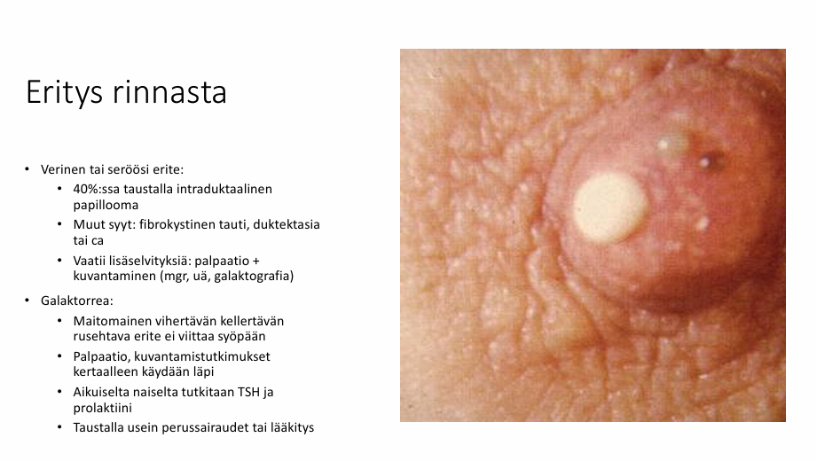
3.45 Mitä tubulaarinen rinta tarkoittaa?
Ei vaihtoehtoja, mutta koita vastata ilman vinkkejä
Solution.
Rinnan kehityspoikkeammaRinnan sidekudoksinen juoste estää normaalin kasvun. Rinnat sijaitsevat kaukana toisistaan, rinta on tyvestään kapea, rinnanaluspoimu on usein alikehittynyt tai korkea. Nänninpiha voi olla voimakkaasti laajentunut, jolloin rauhaskudosta työntyy sen alla olevan rengasmaisen sidekudosvanteen läpi aiheuttaen nännin pullotusta (nänni työntyy tyrämäisen renkaan läpi). Kehityspoikkeama on usein molemminpuolinen, mutta sitä tavataan myös yksipuoleisena tai esimerkiksi Polandin oireyhtymän (synnynnäinen toispuoleinen rintakehän kehityspoikkeama, jossa iso rintalihas (musculus pectoralis major) puuttuu kokonaan (aplasia) tai osittain (hypoplasia)) yhteydessä.
Selvää toiminnallista ja psykososiaalista haittaa aiheuttavat poikkeamat ovat julkisen terveydenhuollon leikkaushoidon piirissä. Lievimpiä muotoja tubulaarisista rinnoista on toisinaan vaikea erottaa normaalista rinnasta, eivätkä ne vaadi leikkaushoitoa.
Tubulaarisen rinnan hoidossa rasvansiirto antaa luonnollisen ja pysyvän tuloksen. Rasvansiirtoja tarvitaan yleensä 1–3 kertaa, mutta tämän jälkeen lopputulos on pysyvä. Tarvittaessa rasvansiirron yhteydessä tai joskus ainoana toimenpiteenä laajaa nänninpihaa pienennetään sekä tarvittaessa nänninpiha ja nänni kohotetaan oikealle paikalleen. Tubulaarisen kehityspoikkeaman korjaamisessa käytetään myös silikoni-implantteja esteettistä rintojen suurentamista vastaavalla tekniikalla.


3.46 Rintojen pienennysleikkaus, mitä laitat lähetteeseen?
Ei vaihtoehtoja, mutta tässä alla olevassa kuvassa lähetteeseen kuuluvat asiat.
- Erityisesti kookkaista rinnoista aiheutuvat oireet, BMI (leikkauskriteeri on Tyksissä <28) ja tupakoimattomuus (kriteeri on vähintään 6kk tupakoimatta ennen leikkausta). Monessa julkisessa yksikössä tupakoimattomuus on ehto leikkausjonoon asettamiselle.
- Monesti potilaat vielä testataan ennen leikkausta näiden toteutumisen varmistamiseksi; pari päivää ennen leikkausta potilaalta voidaan mitata nikotiinin metaboliitti (kotiniini esim. virtsasta) ja varmistaa tupakoimattomuus. Samoin potilas punnitaan ja jos leikkauskriteeri eli BMI <28 ei täyty, niin leikkausta ei ehkä tehdä, vaan se siirretään myöhemmäksi, kunnes potilas on laihtunut tarpeeksi.

3.47 Brickerin avanne on:
- suolirakko
- kontinentti avanne
- valuva avanne
- ureterokutaneostomia
Solution.
cVirtsateiden rekonstruktio voi olla tarpeen esim. rakkosyövän hoidon yhteydessä, jos rakko poistetaan tai jopa silloin, kun yliaktiivinen rakko ei vastaa muulle hoidolle. Virtsateiden rekonstruktio voidaan toteuttaa usein eri tavoin. Tyypillisimpinä vaihtoehtoina ovat pidätyskyvytön avanne (“Bricker”), normaalia kautta tyhjenevä ortotooppinen suolirakko (“Studer”) tai pidätyskykyinen avanne (“Kock”, “Mitrofanoff”, “Indiana”).
Eugen Brickerin vuonna 1950 julkaisema ureteroileokutaneostomia on edelleen käytetyin virtsadiversion leikkausmenetelmä ja tavallisin pidätyskyvytön virtsa-avanne. Tässä niin sanotussa Brickerin leikkauksessa virtsanjohtimet yhdistetään sykkyräsuolen loppuosasta (terminaalinen ileum) eristetyn 15–20 cm:n pituisen osan vatsaontelon puoleiseen päähän. Loppupää tuodaan vatsanpeitteiden läpi tyypillisesti oikealle alavatsalle avanteeksi. Jos sykkyräsuolen loppuosaa ei voida käyttää, voidaan käyttää paksusuolen osaa.
a: Vaihtoehtona virtsa-avanteelle on valikoiduissa tapauksissa ortotooppinen suolirakko, joka on normaalia kautta tyhjenevä virtsarakon korvike (“Studer”-rekonstruktio). Poistettu rakko voidaan korvata suolesta tehdyllä säiliöllä (suolirakko) ja yhdistetään paikoilleen jätettyyn virtsaputkeen. Suolirakkorekonstruktion jälkihoito on potilaalle avannetta työläämpi. Virtsaamisen opettelu vie aikaa ja suolirakkoon liittyy varsinkin yöaikainen virtsankarkailu ja ajoittainen tarve katetroida virtsarakko ja huuhdella siihen kertynyttä suolilimaa. Myös suolirakkopotilaiden metabolisen asidoosin kehittymisen riski on otettava huomioon leikkauksen jälkeen.
b: Kontinentti (ei-inkontinenssia) avanne tarkoittaa, että pystyt kontrolloimaan, milloin päästät virtsaa valumaan eli kyseessä on pidätyskykyinen virtsa-avanne. Jotkut rekonstruktiot (kuten ortotooppinen suolirakko) voivat mahdollistaa sen, että voi virtsata samalla tavalla kuin ennen leikkausta, mutta tietyt avannevaihtoehdot taas vaativat sen, että virtsa katetroidaan ulos (katetroitava virtsa-avanne; näistä yleisimpiä ovat Kockin, Mitrofanoffin tai Indianan pussi).
d: Yksinkertaisimmassa pidätyskyvyttömässä avanteessa virtsajohtimet nostetaan leikkauksessa suoraan iholle. Tätä kutsutaan ureterokutaneostomiaksi. Ureterokutaneostomia on toimenpiteenä suhteellisen harvinainen ja tehdään yleensä tilanteissa, joissa suolta ei voida käyttää avanteen rakentamiseksi tai halutaan minimoida leikkauksenjälkeisen toipumisen riskit. Virtsanjohtimet tuodaan kumpikin iholle erillisinä avanteina. Tietyissä tilanteissa virtsanjohtimet voidaan yhdistää ja tuoda iholle samasta reiästä.
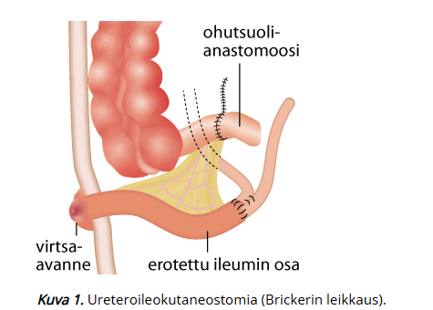 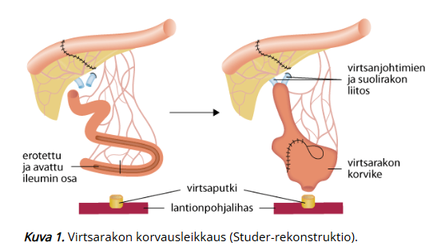 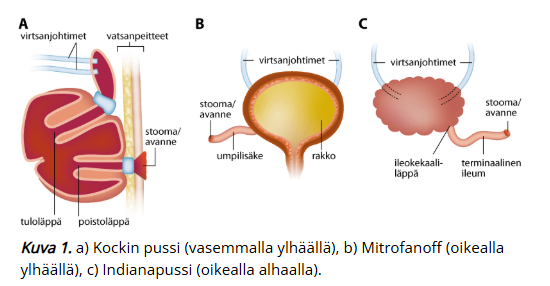3.48 Martorellin ulkus
Ei vaihtoehtoja, mutta tässä tärkeimmät:
Hypertensiivinen säärihaava eli Martorellin haava on epätavallinen, mutta ei harvinainen säärihaavan muoto. Martorellin haava on pitkään huonossa hoitotasapainossa olleen verenpainetaudin komplikaatio 40-80-vuotiailla potilailla, joista osa sairastaa myös diabetesta.
- Kliininen kuva on selkeä ja tunnusomainen: kyseessä on erittäin kivulias pinnallinen nekroottinen haava, jossa on purppuran punainen reunus. Paraneminen on yleensä hidasta.
Martorellin haavan taustalla on mikroangiopatia. Verenpainetautia sairastavilla on suuri ääreisvaltimoiden vastus huolimatta normaalista nilkka-olkavarsipainesuhteesta. Tämä johtuu pienten valtimoiden ahtautumisesta tai tukkeutumisesta. Seurauksena on kudosperfuusion vähentyminen, paikallinen iskemia sekä haavoja ja kipua. Pienet valtimot eivät reagoi normaalisti laajenemalla, mikä johtaa jopa ihon infarkteihin.
Martorellin haava on yleensä resistentti tavanomaisille paikallishoidoille. Potilaalle tulisi kertoa erikoisesta taudinkulusta ja huonosta hoitovasteesta.
- Paikallishoidon onnistumisen kannalta kivun lievittäminen on ensiarvoisen tärkeää. Parasetamolin ja tulehduskipulääkkeiden käyttöä on suositeltu potilaan ikä ja perussairaudet huomioiden. Opioidien (laastarimuodossa tai suun kautta annettuna) tai niiden johdoksien käyttö voi olla tarpeellista ennen haavan hoitoa. Euforisoivien analgeettien, pregabaliinin tai trisyklisten masennuslääkkeiden yhdistäminen lääkehoitoon on suotavaa neuropaattisen kivun vuoksi.
- Kortikosteroideja on käytetty kipua aiheuttavaan tulehdusreaktioon. Paikallisen vahvan kortikosteroidin (klobetasoli-17-propionaatti) on todettu lievittävän kipua, mutta tällaista lääkitystä käytetään vain muutama päivä kerrallaan.
- Verenpaineen hoito on tärkeää, sillä se vähentää kipua ja pienentää haavojen kokoa. Epäselektiivisten beetasalpaajien käyttöä tulisi välttää, koska ne aiheuttavat paikallista vasokonstriktiota ja vähentävät ihon kudosperfuusiota, mikä heikentää haavan paranemista. Tehokas verenpainetaudin hoito ei kuitenkaan yksin paranna haavoja
- Ihonsiirto on nykyisin lupaavin ja suositelluin hoitomuoto Martorellin haavassa, mutta tutkimukset sen vaikuttavuudesta puuttuvat
 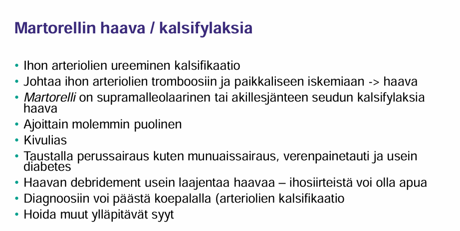
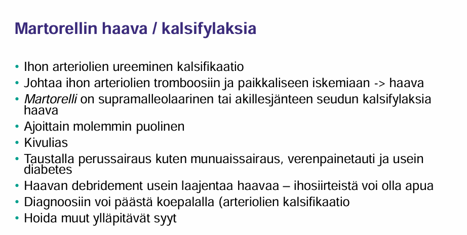
3.49 Akuutti alaraajaiskemia mikä tärkein aiheuttaja?
Ei vaihtoehtoja, mutta koita vastata ilman vinkkejä
Solution.
Tromboosi (n. 50%)Ateroskleroottisen plakin ruptuura ja tromboosi. Usein potilaalla on ollut aikaisemmin alaraajaiskemiaoireita ASO-taudista johtuen ja akuutti alaraajaiskemia voi siis syntyä kroonisen iskemian (ja siten kriittisenkin iskemian) päälle, jolloin on ns. acute on chronic -alaraajaiskemia. Monesti aikaisempia oireita ei kuitenkaan ole johtuen siitä, että ASO-tautipotilaiden toiminta-aste on usein niin matala, että he eivät koe iskeemisiä oireita (ei sohvalla makaaminen paljoa rasita jalkoja).
Aiemmin tavallisin syy oli embolia (pääasiassa eteisvärinästä), mutta AK-hoidon myötä ei enää ole nro 1 (on 2. yleisin syy nykyään eli n. 40% tapauksista). Muita syitä ovat muun muassa polvinivelen sijoiltaanmeno, puukotusvamma ja aortan dissekoituma.
Acute on chronic -alaraajaiskemian oireet ovat yleensä muita reittejä syntyneen akuutin iskemian (oireet alle 2vk) oireisiin verrattuna lievempiä. Tämä johtuu siitä, että krooninen iskemia on johtanut kollateraalisuonien muodostumiseen -> iskemia on vähäisempää tromboosissa. Esim. motoriikan heikkenemisen ja tunnottomuuden vaikeusaste riippuvat hapenpuutteen vaikeudesta ja akutisoituneessa kroonisessa iskemiassa motoriikka sekä sensoriikka voivat olla hyvinkin normaalit juuri kollateraalisuonista johtuen.

3.50 Akuutti alaraajaiskemia hoito
Ei vaihtoehtoja, tässä tärkeimmät:
Tyypilliset oireet, jotka tulee osata tunnistaa voi muistaa 6P-muistisäännöstä: pain, parestesia, pallor, pulselessness, poikilothermia (viileys), paralysis
Oirekuvan toteamisen jälkeen sopiva seuraava temppu on lähete päivystykselliseen verisuonikirurgian arvioon. Akuutin alaraajaiskemian tarkempi hoito ja sen kiireellisyys riippuu iskemian vaikeusasteen arviosta. Luokittelussa käytetään Rutherfordin luokitusta, jossa vaikeusaste jaetaan kolmeen luokkaan alaraajan elinkelpoisuuden perusteella (taulukko alla olevassa kuvassa).
- Ensihoitona annetaan ASA 250mg (jos potilaalla ei ole säännöllistä ASA-lääkitystä). Jos raajan tilanne sallii revaskularisaatiotoimenpiteen odotuksen esimerkiksi seuraavan aamuun (Rutherford I–IIa), annetaan pienimolekyylista hepariinia (esim. enoksapariini 1 mg/kg ihon alle) lisähyytymisen estämiseksi ennen toimenpidettä. Akuutin alaraajaiskemian alkuvaiheen hoidossa on myös tärkeä huolehtia riittävästä nesteytyksestä ja kivun hoidosta. Lisähapesta voi myös olla hyötyä.
Rutherfordin luokista erityisesti luokka II on tärkeä erottaa, sillä tällöin nopealla toiminnalla raaja pystytään vielä pelastamaan suurella todennäköisyydellä.
- Mikäli raajassa ei ole sensorista eikä motorista alenemaa ja valtimosignaalit ovat kuultavissa dopplerkaikukuvauksella, ei ole tarvetta päivystyksellisiin toimenpiteisiin (on siis Rutherford luokka 1)
- Mikäli akuutin alaraajaiskemian oireena on ainoastaan lievä sensorinen alenema (Rutherford IIa), hoito pitää toteuttaa päivystyksellisesti mutta ei välttämättä välittömästi (alle 24 tuntia)
- Välitön (0–6 tuntia) revaskularisaatio on aiheellinen, kun akuutissa alaraajaiskemiassa oireena on motorinen puutos, mutta arvioidaan, että raaja on revaskularisaatiolla säästettävissä (Rutherford IIb); eli siis ei ole täydellistä motoriikan ja sensoriikan puuttumista
- Alaraajan ollessa peruuttamattomasti iskeeminen (Rutherford 3) on tehtävä amputaatio päivystyksellisesti (alle 24 tuntia). Kun kyseessä on elämän loppuvaiheessa oleva hauras, monisairas vanhus, voidaan myös valita palliatiivinen hoitolinja eli hyvä kivun hoito ja saattohoito. Tällöin hoitolinjasta on aina keskusteltava sekä potilaan että omaisten kanssa.
Akuutissa alaraajaiskemiassa välitön kuvantaminen on tarpeellista, jos potilaalla on Rutherfordin IIa/IIb -luokan iskemia.
- Mahdollisia kuvantamiskeinoja ovat TT-angiografia (CTA), magneettiangiografia (MRA) ja ultraääni. Ensisijaisena kuvantamistutkimuksena akuutissa alaraajaiskemiassa tulisi pitää TT-angiografiaa. Kuvantaminen ei kuitenkaan saa viivästyttää kiireellisissä tapauksissa revaskularisaatiotoimenpiteitä!
- Luokan 1 iskemiassa kuvantaminen viimeistään seuraavana arkiaamuna; ei kuitenkaan siis ole tarvetta tehdä ihan heti (24h sisällä)
Revaskularisaatio:
- Rutherfordin IIa -luokan akuutin alaraajaiskemian ensisijainen revaskularisaatiometodi on paikallinen trombolyysi. Trombolyysissä valtimon tukkiva tromboosi liuotetaan injektoimalla katetriteitse tPA-aktivaattoria (esim. alteplaasia eli Actilyse) suoraan trombiin, minkä jälkeen kuvauksella paljastetaan tukkeutumisen syy, usein paikallinen ahtauma tai valtimovaurio, ja hoidetaan se suonensisäisesti. Trombolyysi avaa myös kollateraaleja, joita ei voida hoitaa kirurgisesti. Trombolyysipotilaille jatketaan lisäksi pienimolekyylisen hepariinin antoa vähintään viikon ajan trombolyysin aloittamisesta (tromboosipotilaille määrätään myös yleisesti pysyväislääkkeeksi ASA 100 mg × 1 ja jos trombolyysihoidettu niin tämän päälle LMWH 1vk).
- Akuutissa syvässä iskemiassa trombolyysi (IIb-luokitus) ei tule kyseeseen, koska hoitotulos saavutetaan vasta tuntien kuluttua.
- Rutherfordin IIb -luokan akuutin alaraajaiskemian ensisijainen revaskularisaatiometodi on embolektomia embolian tilanteessa tai tromboosissa angiografian perusteella valittu jokin trombin hoitokeino (kirurginen trombektomia/endarterektomia, aspiraatiotrombektoimia tai mekaaninen trombektomia)
Akuutissa alaraajaiskemiassa revaskularisaation jälkeen raajan tilannetta on seurattava säännöllisesti, koska voi tapahtua reperfuusiovaurio ja sen ilmentymänä aitiopaineoireyhtymä ja rabdomyolyysi. Mikäli kehittyy aitiopaineoireyhtymän oireita, on faskiotomiat tehtävä herkästi ja ilman viiveitä (<6h).
- Mekaanisen trombektomian jälkeen tehdään tyypillisesti aina faskiotomiat. Jos jo lähtötilanteessa todetaan sensomotorisia puutoksia, palpoiden kireät ja aristavat lihakset tai plasman suuri myoglobiinipitoisuus (yli 5 000 µg/l), kannattaa faskiotomiat tehdä profylaktisesti revaskularisaation yhteydessä

 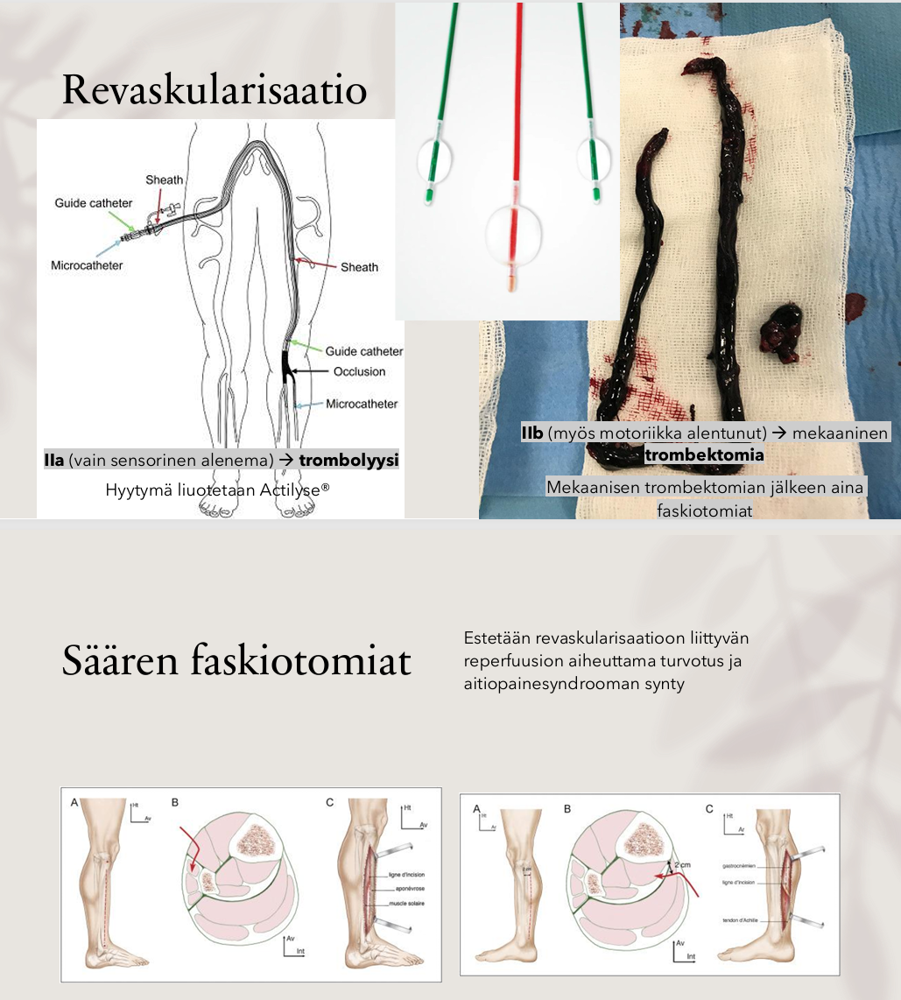
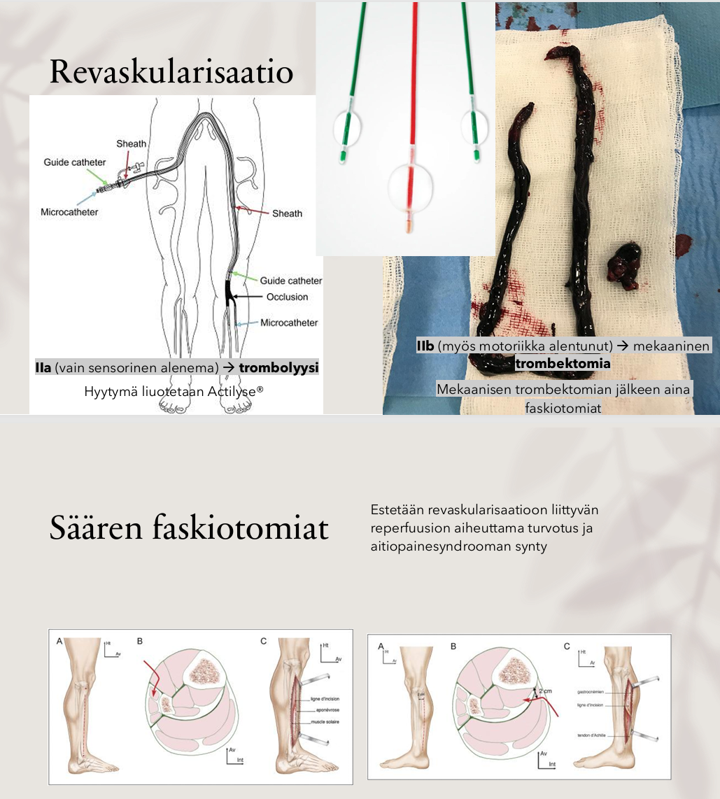
3.51 Kriittisen kroonisen alaraajaiskemian oire on?
- leposärky
- katkokävely
- lateraalisesti indusoituva kipu erityisesti lonkan fleksiossa
- joku (ei wikissä)
Solution.
aKriittinen iskemia (CLI/CLTI) viittaa krooniseen raajaa uhkaavaan iskemiaan. Keskeisimmät oireet ja löydökset ovat lepokipu ja/tai kudosvaurio (haava tai kuolio), jonka on todettu johtuvan alentuneesta verenkierrosta (eli siis >2vk parantumaton valtimohaava tai lepokipu + ABI < 0,4 tai nilkkapaine alle 50 mmHg tai varvaspaine alle 30 mmHg).
Lepokipu ilmenee tyypillisesti yöllä vaaka-asennossa. Kipua lievittää jalan riiputtaminen alaspäin, istuva asento (potilas usein nukkuu istuen) tai pystyasentoon nousu (potilas usein tulkitsee kävelyn auttavan).
b: Katkokävely eli klaudikaatio on kohtalaisen kroonisen alaraajaiskemian merkki; se siis kehittyy jo ennen kriittistä iskemiaa ja leposärkyä. Tyypillistä on kipu kävellessä, joskus jopa seisominen voi provosoida oireet; kivun lokaatio vaihtelee ahtauman tason mukaan. Johtuu siitä, että lihakset menevät ”maitohapolle” iskemiasta johtuen, mikä pakottaa pysähtymään tai hidastamaan vauhtia -> Oire helpottaa minuuteissa (tyypillisesti max 5-15 min) levossa.
Klaudikaation vaikeusaste ei täysin korreloi taudin vaikeusasteeseen. Kriittistä iskemiaa esiintyy 50 %:lla ilman edeltävää katkokävelyoiretta, sillä monet vanhukset liikkuvat hyvin rajallisesti. Erityisesti myös diabeetikoilla alaraajaiskemia on pitkään oireeton ja jopa krooninen raajaa uhkaava iskemia (CLTI) voi olla kivuton neuropatian vuoksi.
c: Ei ole tyypillinen alaraajaiskemian oirekuva3.52 Peräaukon fissuuran ensilinjan hoito suolen toiminnan normaalistamisen jälkeen?
Ei vaihtoehtoja, mutta tässä anaalifissuuroista:
Anaalifissuura (fissura ani) on peräaukon haavauma, jonka pääoireina ovat kipu ja yleensä vähäinen ulostamiseen liittyvä kirkas verenvuoto.
- Todennäköisimmin saa alkunsa mekaanisesta vauriosta (primaarinen fissuura), kuten kova ulostus, anaaliyhdyntä, peräaukon puhdistus ulostamisen jälkeen pyyhkimällä tai ripuli ja sen vaatimat tiheät ulostamiskerrat. Voi myös olla sekundaarinen anaalifissuura (esim. Crohnin taudin, granulomatoottisten sairauksien, maligniteettien tai infektion aiheuttamia).
Diagnosoidaan inspektiolla (ja varovaisella tuseerauksella, mutta ei aina kivun takia onnistu). Anaalifissuura useimmiten (n. 80-85%) muodostuu proktologisella kellotaululla kello kuuteen (keskiviivaan posteriorisesti eli selkäpuolelle). Noin 10 % todetaan edessä keskiviivassa ja jos haava sijaitsee muualla (lateraalisesti), sen syyksi on epäiltävä sekundaarista syytä, esimerkiksi Crohnin tautia.
- Alkuvaiheessa fissuura on punoittava ja pehmeäreunainen. Sormen kärjellä varovaisesti tunnustellen arkuus on voimakasta ja sisäsulkija on kireä
- Jos sulkijalihasten väliseen paiseeseen viittaavia oireita (kuume, voimakas kipu myös ulostamisten välillä, pullotus haavan kohdalla) ei ole, aloitetaan haavauman hoito näiden löydösten perusteella
Hoito:
Akuutilla, päivistä viikkoihin kestäneellä haavaumalla on hyvä taipumus parantua itsestään. Tärkeää on spontaanin paranemisen odottaminen taustasyyn hoitaminen: ulosteen pehmentäminen tai ripulin hoitaminen. Kipua helpottamaan voi käyttää käsikauppalääkkeenä myytäviä puuduttavia voiteita muutaman viikon ajan. Myös lämpimät (n. 40C) istumakylvyt voivat helpottaa kipua ja estää kroonistumista.
- Fissuura voi kuitenkin kroonistua (>8vk kesto), koska akuutti anaalifissuura on kipeä ja aiheuttaa sisemmän sulkijalihaksen spasmin, joka heikentää peräaukon verenkiertoa ja kudoksen happeutumista. Tämän takia fissuura tyypillisesti tulee klo 6:een, koska posteriorinen osa on heikosti perfusoitu -> trauma paranee jo normaalistikin hitaasti.
- 6-8 viikon kuluessa haavauman kroonistuessa sen reunat kiinteytyvät ja haavan pohjalla on nähtävissä sisäsulkijan säikeet. Tyyppimuutoksia ovat yläpuolella oleva kookkaampi anaalipapilla ja alapuolella vartijapoimuksi kutsuttu ihopoimu.
Kroonista haavaumaa hoidetaan vähentämällä sulkijalihaksen tonusta ensisijaisesti voiteilla (nitraattivoiteet tai kalsiuminestäjävoiteet) tai mahdollisesti botuliinitoksiinipistoksella tai tarpeen mukaan kirurgisella hoidolla (sfinkterotomia)
- Ex tempore -kalsiuminestäjävoiteiden (diltiatseemi tai nifedipiini) etu on, että ne eivät aiheuta päänsärkyä kuten nitraattivoide (esim. Rectogesic; on myös kalliimpi).
- N. 50 % potilaista paranee voidehoidolla
- Jos potilas ei vastaa voidehoitoon parissa kuukaudessa, tulee hänet lähettää ESH leikkausarvioon (kirurgisessa hoidossa katkaistaan sisemmän sulkijalihaksen säikeitä (sfinkterotomia). Itse fissuuraan ei tarvitse kajota.)
- Lateraalinen sfinkterotomia on peräaukon haavauman tehokkain hoito - yli 90 % haavoista paranee. Toimenpiteen jälkeen 3-30 %:lle potilaista kehittyy kuitenkin kaasunkarkailua tai tuhrimista. Tämän vuoksi haavauman kirurginen hoito yleensä aloitetaan revisiolla eli fibroottisten reunojen, vartijapoimun ja anaalipapillan poistamisella yhdistettynä botuliinipistokseen; Paranemisen todennäköisyys ei ole yhtä hyvä kuin sfinkterotomiassa, mutta pidätyskyvyttömyyden riski on vain 1-2 %:n luokkaa.
- Voidehoito voidaan myös aloittaa heti akuutissakin fissuurassa, jos oireet ovat voimakkaat. Peräaukon haavaumista 60–80 % kuitenkin paranee spontaanisti eikä voidehoitoa usein tarvita akuutissa vaiheessa.
Tiivistettynä hoito ja aiheet ESH-lähetteelle:
- Akuutissa vaiheessa (6-8vk) hoida taustatekijät ja kipu (puuduttavat voiteet). Istumakylpyjä voi ehdottaa. Vaikeassa tapauksessa voi aloittaa diltiatseemivoiteen heti.
- Haavan kroonistuessa ensisijaisesti aloitetaan voidehoito (ensisijaisesti diltiatseemi). Jos potilas ei vastaa voidehoitoon 6-8 viikossa, tulee hänet lähettää erikoissairaanhoitoon leikkausarvioon. Usein tehdään ensiksi botuliinipistoshoitokokeilu, mutta tarvittaessa edetään lateraaliseen sfinkterotomiaan.
- Potilas tulee mahdollisesti lähettää ESH myös, jos todetaan epätyypillisesti sijaitseva (lateraalinen) anaalifissuura epäiltäessä Crohnin tautia tai todetaan poikkeuksellisen näköinen haavauma, joka herättää epäilyn maligniteetista.
3.53 Mikä voi aiheuttaa PSA:n nousua?
Ei vaihtoehtoja, tässä tärkeimmät aiheesta:
PSA on elin-, mutta ei syöpäspesifinen.
- Siksi se voi olla kohonnut hyvänlaatuisessa eturauhasen liikakasvussa (BPH), eturauhastulehduksessa ja muissa hyvänlaatuisissa tiloissa.
- PSA:ta saattavat nostaa myös muun muassa ejakulaatio, pyöräily, virtsatietulehdus, eturauhasen tulehdus, virtsaumpi ja virtsarakon katetrointi. Nämä tulee ottaa huomioon näytettä otettaessa.
Eturauhassyöpä on myös mahdollinen, vaikka PSA-arvo olisi pieni. PSA:n viitearvot vaihtelevat iän mukaan (nousee iän myötä) ja laboratoriokohtaisesti.
3.54 Potilaalla ASO-tauti. Oireena laihtuminen ja postbrandiaalinen vatsakipu. Ei halua syödä. Gastroskopia ja kolonoskopia normaalit. Tt:ssä ei tuumoria. Millä tutkimuksella pääset todennäköisimmin diagnoosiin?
Ei vaihtoehtoja, mutta koita vastata ilman vinkkejä
Solution.
TT-angiografiaPotilaalla on todennäköisesti krooninen mesenteriaali-iskemia.
Kroonista mesenteriaali-iskemiaa kutsutaan usein “suoliston angiinaksi”. Sen taustalla on lähes aina valtimokovettumataudin aiheuttamat tukokset tai tiukat ahtaumat suolilievevaltimoissa (yleensä vähintään 2/3 suoliston valtimopäähaaroista (CA, SMA, IMA) tulee olla ahtautuneet, jotta oireita ilmenee; yhden suonen tauti on siis useimmiten oireeton). Ilmenee vatsakipuna, mikä alkaa pian ruokailun jälkeen ja kestää 1–2 tuntia (johtuu lisääntyneestä hapentarpeesta suolistossa ruokaa liikuteltaessa; sama periaate kuin urheilun aiheuttamassa rintakivussa jos potilaalla on sepelvaltimotauti; myös itse urheilu voi pahentaa mesenteriaali-iskemiaa). Ruokailuun liittyvät kivut johtavat ruokahalun heikkenemiseen, syömisen välttelyyn ja lopulta tahattomaan laihtumiseen.
Vaikka oirekuvan, statuksen (mahdollisesti vatsan alueelta kuuluva suhahtava sivuääni (bruit)) ja angiografian perusteella diagnoosi olisi selvä, niin muut vatsakivun syyt on kuitenkin suljettava pois, ja ennen hoitopäätöstä tehdään yleensä gastroskopia (löytyy varsin usein atrofiaa tai haavaumia, jotka eivät liity helikobakteeriin tai tulehduskipulääkkeiden käyttöön. Normaali endoskopialöydös ei kuitenkaan sulje pois mesenteriaali-iskemiaa. Keliakian mahdollisuus on syytä selvittää potilailta, joilla esiintyy painon laskua). Tällekin potilaalle oltiin siis jo tehty gastroskopia, kolonoskopia ja vatsan TT. Tavallista on, että kroonisen vatsakivun vuoksi tehdään laajasti muita tutkimuksia, mitkä eivät johda diagnoosiin. Siksi on tärkeää muistaa epäillä kroonista mesenteriaali-iskemiaa. Diagnoosi absoluuttisesti varmistuu vasta, kun kivut helpottavat onnistuneen revaskularisaation jälkeen.
Kroonisen mesenteriaali-iskemian ensisijainen hoito on endovaskulaariset hoidot: pallolaajennus ja stentit. Kirurginen hoito on vaihtoehto potilaille, joilla suonensisäinen hoito ei ole mahdollista tai järkevää (esim. pitkä totaalitukos, vaskuliitti tai muu tukoksen syy kuin valtimokovettumatauti) tai jos suonensisäinen hoito ei ole onnistunut. Tällöin tehdään ohitus yleensä ylemmän suolilievevaltimon ja sisusvaltimorungon alueelle joko antegradisesti (ohituksen lähtökohta aortassa sisusvaltimorungon yläpuolella) tai retrogradisesti (ohitus munuaisvaltimotason alapuolisesta aortasta tai lonkkavaltimosta).
Revaskularisaation lisäksi on tärkeää huolehtia erityisesti kahdesta lääkityksestä sekundaaripreventiomielessä antitromboottinen (ASA 100mg 1x1) lääkitys ja statiinilääkitys. Stenttauksen jälkeen suositellaan normaalin valtimotaudin sekundaariprevention (100 mg asetyylisalisyylihappoa päivässä ja statiinilääkitys) lisäksi klopidogreelilääkitystä (DAPT) vähintään kuukauden ajaksi stenttitromboosin ehkäisemiseksi. Ylemmän suolilievevaltimon akuutti stenttitromboosi on kuitenkin harvinainen, joten jos potilaalla esiintyy vuoto-ongelmia toimenpiteen jälkeen, klopidogreelilääkitys voidaan lopettaa.3.55 Potilaalla n. 1,5cm palpoituva muutos kilpirauhasessa. Ensilinjan tutkimus?
Ei vaihtoehtoja, mutta koita vastata ilman vinkkejä
Solution.
UÄYleisesti kilpirauhasen ensisijainen ja tärkein kuvantamiskeino on UÄ. Kliinisesti yksittäisenä havaitun kyhmyn ultraäänitutkimus löytää usein monia erillisiä kyhmyjä, ja joskus palpaatiolöydös ei saa vahvistusta ultraäänitutkimuksesta.
Jos UÄ:ssä todetaan suspekti muutos, siitä otetaan ohutneulabiopsia UÄ-ohjatusti. Alle 1 cm suspektia kyhmyä ei yleensä biopsoida (biopsioidaan, jos potilaalla on riskitekijöitä tai ikää on alle 35 v)

3.56 Laparotomia vs. laparostomia
Ei tarkempaa kysymyksenasettelua tai vinkkejä, mutta todennäköisesti kysytty, että mikä on näiden termien ero. Koita vastata ilman vinkkejä.
Solution.
Laparostomia = jätetty aukiLaparotomia tarkoittaa vatsaontelon avoleikkausta. Yleisin vatsaontelon avausviilto on keskiviiltolaparotomia, jossa vatsaontelo avataan vatsalihasten välissä pystysuunnassa linea alban kohdalta sopivan mittaiselta pituudelta.
Laparostomia tarkoittaa kirurgista hoitokeinoa, jossa vatsaontelo avataan anteriorisesti, mutta jätetään leikkauksen jälkeen tarkoituksellisesti auki (ns. open abdomen). Käytetään intra-abdominaalisen paineen vapauttamiseen, kun potilaalla on vatsaontelon ylipaineoireyhtymä (esim. akuutissa pankreatiitissa).
Laparoskopia taas on tähystysleikkaus, jossa vatsaonteloon tehdään pieniä viiltoja, joiden kautta vatsaonteloon työnnetään instrumentit ja kamera.
Yleisesti toimenpiteiden nimeämisestä kannattaa muistaa ainakin seuraavat:
- -tomia = kirurginen avoleikkaus johonkin elimeen sisälle
- -stomia = kirurgisesti uuden reiän luominen (esim. kolostomia, joka on iholle tuotu = tyypillinen paksusuoliavanne)
- -ektomia = rakenteen poistaminen


3.57 Polandin syndrooma: mitä tarkoittaa?
Ei vaihtoehtoja, mutta koita vastata ilman vinkkejä
Solution.
Iso rintalihas puuttuuPolandin oireyhtymä on synnynnäinen toispuoleinen rintakehän kehityspoikkeama, jossa iso rintalihas (musculus pectoralis major) puuttuu kokonaan (aplasia) tai osittain (hypoplasia). Rintarauhasen tai nännin anomalioita tai hartialihasten puuttumista voi myös olla. Rintarauhaskudos – jos sitä on – on usein fibroottista, koska puuttuvan lihaksen tilalla on kovia sidekudosjuosteita. Polandin oireyhtymä on miehillä kaksi kertaa tavallisempi kuin naisilla.
Liitännäiskehityspoikkeamia ovat muun muassa pienen rintalihaksen (m. pectoralis minor) puuttuminen, kylkiluu- tai rustopuutokset, samanpuoleisen leveän selkälihaksen (m. latissimus dorsi) puuttuminen tai hypoplasia, ihon ja subkutiksen atrofia, sternumin rotaatiovirhe, saman kehonpuoliskon käden, kyynärvarren tai koko yläraajan kehityspoikkeama, kehityspoikkeamia voi myös olla esimerkiksi ruoansulatuskanavassa, maksassa tai sydämessä
Kudospuutoksen korjaus vaihtelee kehityspoikkeaman vaikeusasteen mukaan. Korjauksessa voidaan käyttää omakudossiirteitä, kuten rasvansiirtoa, kielekkeitä, implanttia tai näiden yhdistelmiä. Kehityspoikkeamia korjattaessa potilaat ovat usein nuoria. Menetelmää valittaessa implantti- tai omakudoskorjauksen välillä tulisi muistaa, että implantti ei laskeudu normaalisti ikääntyvän rinnan tavoin. Implantin ympärille voi myös kehittyä kapselikontraktuura, joka edellyttää uusintaleikkausta.
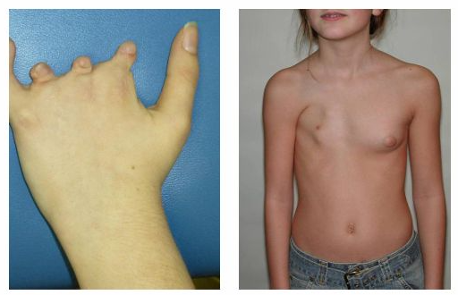
3.58 Prostatahyperplasian lääkkeet ja ortostaattinen hypotensio
Ei vaihtoehtoja, mutta tässä aiheesta:
Lievä- ja keskivaikeaoireisten komplisoitumattomien BPH-potilaiden virtsaamisoireita hoidetaan ensisijaisesti lääkehoidolla, joka on tyypillisesti alfasalpaaja ja/tai 5-alfareduktaasin estäjä.
Alfasalpaajat eli α1-reseptorin salpaajat (esim. tamsulosiini tai alfutsosiini) vaikuttavat rentouttamalla prostaattisen virtsaputken ja virtsarakon kaulan sileää lihaksistoa. Ne lievittävät nopeasti (vrt. 5-ARI:t jotka hitaammin) oireita, lisäävät virtsasuihkun huippuvirtaamaa ja vähentävät jäännösvirtsan tilavuutta.
- Ne kuitenkin myös salpaavat verisuonien alfareseptoreita ja siten laskevat verenpainetta ja erityisesti heikentävät verisuonien supistumista vasteena seisomaan nousemiselle, mikä pahentaa ortostaattista hypotensiota.
5-ARI:t (esim. finasteridi tai dutasteridi) taas vaikuttavat eturauhasen liikakasvuun estämällä testosteronin metaboloitumista dihydrotestosteroniksi (DHT), jolloin seerumin DHT:n pitoisuus pienenee. Tämä vaikutus ilmenee hitaasti ja tämän takia 5-ARI:t lievittävät oireita hitaammin kuin alfasalpaajat.
- Ne kuitenkaan eivät vaikuta suoraan verisuoniin, jonka takia ortostaattisen hypotension riski ei käytännössä nouse.
3.59 Spigelin tyrän sijainti
- molemminpuolinen ylävatsa
- molemminpuolinen alavatsa
- oikea ylävatsa
- vasen alavatsa
Solution.
dSpigelin tyrä työntyy vinojen vatsalihasten väliin rektuslihaksen lateraalireunasta linea arcuatan tasolla eli siis tyypillisesti noin 3–5 cm navan alapuolella ja siitä lateraalisesti rectuslihasten lateraalireunaan. Pientä Spigelin herniaa voi olla vaikea tuntea palpoiden, koska se jää uloimman vinon vatsalihaksen aponeuroosin alle eikä pullistu subkutikseen saakka kuten muut tyrät.
Spigelin tyrä on tyypillisesti unilateraalinen ja todetaan hieman useammin vasemmalla puolella. Yleisin toteamisikä n. 50-60 vuotta.
Kuvantamistutkimukset auttavat diagnostiikassa. Spigelin tyrä korjataan samoin periaattein kuin muut primaariset vatsanpeitteiden tyrät (hoito jos oireita ja pelkin ompelein jos pieni ja verkolla jos isompi tyräportti). Spigelin tyrällä on suuri kureutumisriski -> herkästi leikkaus.

3.60 55v nainen, rinnan punoitus ja kuumotus, ei palpoituvaa resistenssiä. Mikä jatkohoito?
Ei vaihtoehtoja, tässä mahdollinen jatkohoito:
Potilaan oirekuva viittaa mastiittiin, mutta rintasyöpä voi muistuttaa mastiittia, jonka takia etenkin ei-imettävillä naisilla tulee sulkea pois rintasyöpä, jos rintaan tulee mastiitti → mammografia infektion rauhoituttua
- Tulehdus rauhoitetaan antibiooteilla, ja tulee valita stafylokokkiin tehoava mikrobilääke. Ensisijaisesti flukloksasilliini 750mgx3 tai kefaleksiini 500mgx3.
- Tulehdukseen voi liittyä absesseja, jotka vaativat aina dreneerauksen.
…
Periduktaalimastiitti on yleisin ei-imettävän naisen (potilas 55v) rintatulehdus, tyypillisimmin tupakoivalla (90% polttaa) naisella. Tavallisimmat oireet ovat kipu ja märkäerite areolan reunasta. Areolan ympäristössä todetaan tulehdus, absessi, kyhmy, fisteli tai sisäänvetäytynyt nänni.
- Periduktaalimastiitin uusiutumisen ehkäisemiseksi on välttämätöntä lopettaa tupakointi.
- Uusiutuvat tai kroonisiksi muuttuneet tulehdukset edellyttävät laajojakin kirurgisia toimenpiteitä, kuten mamillan saneerausta, jossa kyseinen duktusalue poistetaan mamillan kärkeen saakka. Se voidaan tehdä polikliinisesti paikallispuudutuksessa.
Imetysajan mastiitti johtuu imettämisestä ja haavan kautta päässystä vauvan suubakteerista -> ei tarvita mammografiaa, jos tila paranee normaalisti imetystä jatkamalla ja ab-hoidolla
3.61 Rintasyövän kolmoisdiagnostiikka
Ei vaihtoehtoja, mutta selitä kolmoisdiagnostiikan periaate ilman vinkkejä
Solution.
Palpaatio+mgr+PNBKolmoisdiagnostiikka siis perustuu kliiniseen tutkimukseen (palpaatio, inspektio, anamneesi), kuvantaminen (ensisijaisesti mammografia ja jatkotutkimuksena UÄ) ja näytteisiin (paksuneulabiopsia ensisijaisesti). Jos yksikin diagnostiikan osa viittaa pahanlaatuisuuteen, muutosta ei saa jäädä seuraamaan.
Toisin sanoen kolmoisdiagnostiikan periaate: Jokaisen yllä mainitun löydöksen oltava ilman ristiriitaa hyvänlaatuisia, jotta rinnan muutos voidaan jättää poistamatta. Epäselvissä tapauksissa muutos poistetaan.
Kolmoisdiagnostiikka on ns. perusdiagnostiikka ja toteutetaan perusterveydenhuollossa.
Mammografiaseulonnat ovat parantaneet varhaisvaiheen diagnostiikkaa; 50-69-vuotiaat naiset kutsutaan tutkimukseen kahden vuoden välein.3.62 Mihin käytetään Sengstaken-Blakemoren tuubia?
Ei vaihtoehtoja, mutta koita vastata ilman vinkkejä
Solution.
Esofagusvariksien tyrehdyttämiseenJos ruokatorven variksvuotoa ei saada tyrehtymään lääke- tai endoskooppisin hoidoin (ligaatio/skleroterapia), voidaan vuoto tyrehdyttää tilapäisesti tamponaatioputkella tai metallistentillä. Voidaan asettaa Sengstaken–Blakemoren tai Lintonin putki, jotka ovat tilapäisiä hoitoja, kunnes voidaan tehdä TIPS (transjugulaarinen intrahepaattinen portosysteemisuntti; ei hoitona sovi liian huonokuntoiselle eikä vaikeaa maksan vajaatoimintaa sairastavalle) tai sunttikirurgia.
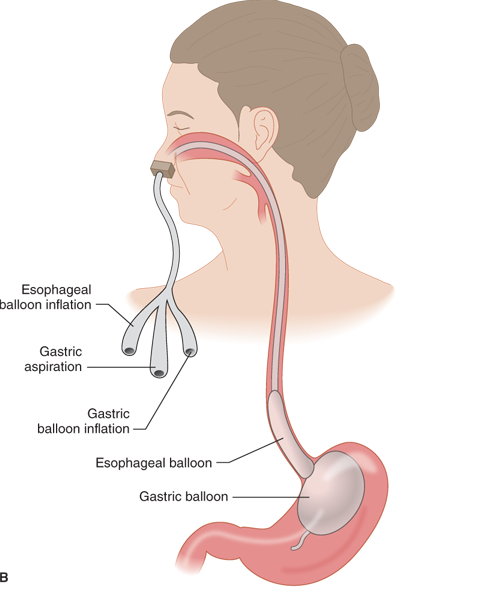
3.63 Rectuslihasten diastaasi: leikataanko?
Ei vaihtoehtoja, mutta koita vastata ilman vinkkejä
Solution.
Ei leikataRektuslihasten välissä oleva valkea jännesauma (linea alba) saattaa venyä iän ja painonnousun myötä; yleistä myös raskauden jälkeen. Lihaskalvoalue eli aponeuroosi antaa periksi, kun vatsaontelon tilavuus kasvaa. Pystyasennossa tämä näkyy niin sanottuna tynnyrivatsana. Makuulta noustessa tai vatsalihaksia jännittäessä rektuslihasten väliin tulee harjumainen pullistuma. Usein tätä luullaan tyräksi ja vatsakipujen syyksi, mutta tila on viaton eikä vaadi hoitoa. Kyseessä ei siis ole tyrä, koska linea alba on ehjä. Jos potilaalla on vatsakipuja niin rektusdiastaasi ei ole niiden taustalla.
Vatsalihasten venyminen hoidetaan pääsääntöisesti lihaksia vahvistavilla harjoituksilla. Jos lihasharjoituksista huolimatta on jatkuvia vartalon hallinnan ongelmia, selän kipuja ja väsymistä, vatsanpeitteiden löysyyden korjaaminen kirurgisesti voi auttaa. Myös raskauden aikana kehittyneen napatyrän korjauksen yhteydessä on joskus aiheellista korjata diastaasi.
 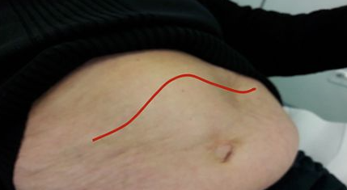
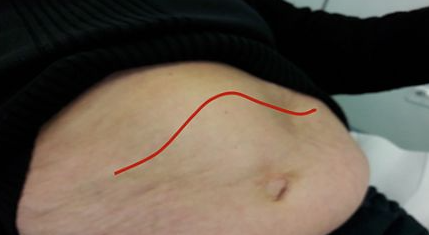
3.64 Reduktioplastian yleisin komplikaatio
Ei vaihtoehtoja, koita vastata ilman vinkkejä
Solution.
Haavan paranemisongelmatReduktioplastialla tyypillisesti tarkoitetaan rintojen pienennysleikkausta. Sen yleisimpiä komplikaatioita ovat:
Haavan paranemisongelmat, joita tulee noin viidesosalle potilaista. Haava-aukileet paranevat useimmiten paikallishoidolla. Ihonsisäiset sulavat ompeleet aiheuttavat usein lankafisteleitä, jotka voivat pitkittää haavan eritystä. Hoitona on fistelöivän ommelmateriaalin poisto, eikä hoitoon tarvita mikrobilääkekuuria. On muistettava, että haavojen paraneminen on yksilöllistä. Reduktioplastian jälkeinen leikkaustulos muotoutuu 6–12 kuukauden aikana.
Leikkauksen jälkeinen verenvuoto ilmenee pian ja voi vaatia päivystysleikkauksen
Harvinainen komplikaatio, nänninpihan verenkiertohäiriö, voi johtaa nännin kuolioon, jolloin nänni joudutaan poistamaan
Reduktioplastiaan voi liittyä myös ihon ja nännin tuntohäiriöitä, joista osa palautuu
Reduktioplastian jälkeen imettäminen ei välttämättä onnistu3.65 Kroonisen pankreatiitin diagnostiikka
Ei vaihtoehtoja, tässä tärkeimmät aiheesta:
Kroonisen pankreatiitin diagnostiikkaan on useita kriteeristöjä, mutta kroonisen haimatulehduksen diagnostiikka perustuu ensisijaisesti TT-tutkimukseen
- TT-kuvassa voidaan nähdä mm. haiman kalkkeutumia, jotka viittaavat krooniseen pankreatiittiin
- Muita mahdollisia diagnoosiin viittaavia löydöksiä ovat eksokriininen vajaatoiminta (matala F-Elast1; ei ole suoraan diagnostinen krooniselle haimatulehdukselle) ja tietysti kroonisen pankreatiitin histologia
Normaali kaikututkimuslöydös ei ole poissulkeva, mutta haiman kalkkeumia tai muita kroonisen haimatulehduksen viitteitä voi joskus näkyä.
Amylaasi voi nousta kipukohtausten aikana, mutta pääasiassa ei tarvitse tutkia kroonista pankreatiittia epäiltäessä, koska on usein normaali (Haima on fibrotisoitunut ja ei enää pysty tuottaa entsyymejä normaalisti; vrt. akuuttiin pankreatiittiin, jossa solujen vaurioituminen vapauttaa runsaasti entsyymejä ja näitä voidaan käyttää diagnostiikassa).

3.66 Priapismin hoito
Ei vaihtoehtoja, tässä tärkeimmät priapismista:
Priapismi = Kestokangistus; kivulias, pitkään (>4h) jatkuva erektio, joka ei yleensä liity kiihottumistilaan eikä laukea ejakulaatiosta
Priapismi voidaan periaatteessa jakaa kolmeen tyyppiin, mutta ainoa, josta tullaan kurssilla todennäköisesti kysymään on iskeeminen (low-flow) priapismi. Se on myös vakavin tyyppi. Low-flow priapismissa saadaan heikkoa arteriavirtausta penikseen ja verta ei pääse pois peniksestä -> vähähappinen veri kertyy ja johtaa iskeemiseen kudosvaurioon. Aiheuttajia on esimerkiksi idiopaattinen (yleisin), erektiolääkkeet, sirppisoluanemia (sirppiytyneet punasolut tukkivat peniksen laskimot), leukemia ja spinaalitrauma.
Vähävirtauksinen iskeeminen priapismi tulee tunnistaa ja hoitaa päivysluonteisesti. Yli kuusi tuntia kestänyt jäykkä ja kivulias erektio on riski kudosvaurioille ja voi johtaa paisuvaisen fibrotisoitumiseen tai jopa peniksen kuolioon.
- Mahdollisesti reipas liikunta ja kylmä suihku voivat auttaa pitkittyneessä erektiossa, mutta oikea >4h kestänyt priapismi tulee jo hoitaa lääkkeellisesti
- Lääkäri saa priapismin laukeamaan punktoimalla toisen paisuvaiskudoksen paksulla, esim. 21G:n neulalla, aspiroimalla siitä 100–200 ml tummaa laskimoverta, puristamalla samalla siittimen vartta ja ruiskuttamalla paisuvaiseen adrenergista lääkettä, tavallisimmin etilefriinihydrokloridia, jonka kerta-annos on 5–10 mg. Vaihtoehtoisina lääkkeinä paisuvaiseen voidaan injisoida adrenaliinia 0,5–1,0 ml (1:1 000) tai noradrenaliinia 10–20 µg.
- Lääkeinjektio voidaan tarvittaessa uusia puolen tunnin kuluttua edellisestä injektiosta. Lääke tulee ruiskuttaa hitaasti paisuvaiskudokseen. Potilaan pulssia ja verenpainetta tulee seurata injektion aikana ja sen jälkeen noin puolen tunnin ajan. On huomioitava, että siitin ei veltostu heti lääkeinjektion jälkeen, vaan yleensä kestää useita tunteja, ennen kuin siitin saavuttaa normaalin pehmeyden.
- Jos priapismi ei laukea kahden injektion jälkeen, potilas tulisi lähettää urologiseen yksikköön hoitoon. Priapismin kirurgisessa hoidossa corpus cavernosumin ylipaineinen veri pyritään ohjaamaan joko corpus spongiosumiin tai suoraan suureen laskimoon. Winterin sunttileikkauksessa pistoveitsellä tai prostatabiopsianeulalla tehdään yhteys corpus cavernosumin ja terskan paisuvaiskudoksen välille niin, että veri pääsee poistumaan corpus spongiosumin kautta. Distaalisen suntin osoittautuessa riittämättömäksi joudutaan tekemään avoleikkaus, jossa tehdään fisteli paisuvaisten välille niiden proksimaaliosaan tai yhdistetään paisuvainen suoraan laskimoon.
Lyhyesti siis hoito aspiraatio+etilefriini ad x2. Jos ei auta niin urologiseen yksikköön päivystysleikkaukseen.

3.67 Mitä teet ensimmäisenä, jos kaveri saa palovamman kiukaasta?
Ei vaihtoehtoja, mutta tässä mahdollinen vastaus:
- cABCDE tietysti aina toimintamallina, mutta palovamman suhteen kentällä kaverin irrottaminen kiukaasta ja palovamman viilentäminen. Viilennä palovamma-alue huuhtelemalla sitä n. +20-asteisen juoksevan veden alla n. 10−15 min:n ajan; älä käytä viilennykseen jäätä tai jäävettä. Viilennys on hyödyllistä ensimmäisten 3 t:n ajan vammasta. Itse potilas ei saa viilentyä ja lämmön pitämisestä tulee pitää huolta, mutta palovammakohtaa tulee viilentää.
- Vie kaveri päivystykseen. Kuljetusta varten palohaavat peitetään puhtaalla kuivalla sidoksella. Kuljetuksen ajaksi palovamma-alueet tulee pitää kohoasennossa.
3.68 Melanooma, basaliooma ja levyepiteelikarsinooma (millaiset esiasteet, mitkä näistä metastasoi?)
Ei vaihtoehtoja, mutta tässä suluissa spesifoitujen asioiden vastaukset:
- Melanooma: Ihon pigmenttisoluista alkunsa saava syöpä. Voi olla lähtöisin esimerkiksi dysplastisesta neevuksesta, mutta useimmiten melanooma kehittyy ilman esiastetta suoraan kliinisesti terveelle iholle. Ennen invasiivista melanoomaa voi olla in situ -melanooma (pintamelanooma), jossa kasvu on radiaalista pitkin epidermistä. Joissain lähteissä (esim. kirran dioissa) melanoomat jaetaan sen esiasteisiin (melanoma in situ ja lentigo maligna) ja invasiiviseen melanoomaan, mutta in situ melanoomat eivät sinänsä ole melanooman esiasteita, vaan jo ihan oikeaa melanoomaa, mutta vain ennen invaasiota. Lentigo maligna on myös in situ -melanooman alaluokka, joten tämä diojen jako ei ole kovinkaan järkevä.
- Invasiiviset melanoomat metastasoivat. In situ -vaiheessa ei ole metastasointiriskiä. Ei ole vielä tapahtunut invaasiota dermikseen, jossa imusuonet sijaitsevat -> metastasointi ei onnistu epidermiksestä käsin.
- Basaliooma: Tyvisolusyövälle ei tyypillisesti ole todettavissa perkursorileesiota, vaan se syntyy de novo.
- Ei käytännössä metastasoi koskaan. Kasvaa kuitenkin invasiivisesti, jonka takia se kuuluu hoitaa (voi esim. kehitysmaissa syövyttää invasiivisen kasvun kautta potilaan kasvot täysin)
- Levyepiteelikarsinooma: Okasolusyöpä voi kehittyä suoraan terveen näköiselle iholle, mutta useammin se kehittyy esiasteeseen, joita ovat aktiininen keratoosi eli solaarikeratoosi ja carcinoma in situ eli Bowenin tauti. Bowenin tauti itse asiassa on jo okasolusyöpää, mutta ei vain ole invasoinut epidermiksen alle; aktiinen keratoosi ei vielä ole okasolusyöpää
- Metastasointi suhteellisen harvinaista (n. 0-16% riippuen tuumorin syvyydestä), mutta tyvisolusyöpää yleisempää. Mikäli kasvaimen invaasiosyvyys on <2 mm, riski metastasoinnille on 0 %, 2,01–6 mm:n kasvaimissa 4 % ja >6 mm:n kasvaimissa 16 % -> Paksuus > 6 mm tai kasvu verinahkan alaosiin tai ihonalaiskudokseen on täten okasolukarsinooman suuren riskin kriteeri.
3.69 Sarkoomien etiologia
Ei vaihtoehtoja, mutta tarjotusta vastauksesta on voinut päätellä, että on kysytty jotain luokkkaa: “Onko suurin osa sarkoomista perinnöllisiä vai sporadisia?”
Solution.
Sporadisia3.70 Mihin sarkoomat tavallisesti metastasoivat?
Ei vaihtoehtoja, mutta koita miettiä, mikä on pehmytkudossarkoomien yleisin metastasointilokaatio.
Solution.
KeuhkotSarkoomat metastasoivat hematogeenisesti (vrt. karsinoomat, jotka pääasiassa lymfateitse) ja metastasoivat tämän takia usein keuhkoihin, koska siellä on laajat ja rikkaat verisuoniverkostot.
Pehmytkudossarkoomien etäpesäkkeet, erityisesti keuhkometastaasit pyritään poistamaan kirurgisesti, jos se on mahdollista. Etäpesäkkeiden poisto voi joskus olla kuratiivinen toimenpide.3.71 Potilaalla suhteettoman kova vatsakipu, vatsa pehmeä ja myötäävä, potilas tuskainen, mitä kuvannat?
Ei vaihtoehtoja, mutta koita vastata ilman vinkkejä
Solution.
Vatsan TT ja viskeraalisuonten tilanne3.72 Laskimovajaatoiminnan patofysiologia
Ei vaihtoehtoja, tässä patofysiologiasta tärkeimmät:
Perimmäinen syy tuntematon, mukana inflammaatio, jonka pohjalta laskimoiden seinämärakenne degeneroituu, laskimoiden seinämärakenne tuhoutuu ja lopulta laskimoläpät eivät ole enää pitävät.
- Normaalilaskimopaluu alaraajasta perustuu toimivaan pohjelihaspumppujärjestelmään. Lihassupistus puristaa syvät laskimot kasaan, jolloin laskimoveri siirtyy sydäntä kohti. Pinnallisista laskimoista veri virtaa syvään laskimojärjestelmään yhdyslaskimoiden ja pinnallisten päärunkojen kautta lihassupistusten välisenä aikana matalamman paineen suuntaan. Normaali läppätoiminta estää takaisinvirtauksen (refluksi) lihastyön päätyttyä.
- Sulkeutuneet läpät katkaisevat laskimon sisällä olevan veripilarin muutaman sentin välein ja tämä vähentää hydrostaattista painetta.
Läppien ollessa ei-pitävät, niin laskimoiden hydrostaattinen paine nousee ja tämä johtaa suonikohjuihin ja alaraajaturvotukseen sekä lopulta laskimohaavoihin.

3.73 Aortta-aneurysman riskitekijät. Mikä ei ole riskitekijä?
- naissukupuoli
- tupakointi
- Ensimmäisen asteen sukulaisuus
- ikä
Solution.
aAortan aneurysma ja varsinkin vatsa-aortan aneurysma (AAA) on selvästi yleisempi miehillä.
b: Tupakointi on voimakkain AAA-tautiin assosioituva riskitekijä, ja sen vähenemistä pidetään syynä esiintyvyyden vähenemiseen.
c: Aneurysmissa on selkeä perinnöllinen riski.
d: Riski kasvaa iän myötä.3.74 Okkluusion auskultaatiolöydöksissä suoliäänet
- poissa
- vaimeat
- normaalit
- vilkkaat
Solution.
dHuonot vaihtoehdot, koska sekä a, (b) ja d ovat sinänsä oikein. Suolitukoksen (okkluusion) auskultaatiolöydökset riippuvat taudin vaiheesta. Alkuvaiheessa suoli yrittää työntää läpi → vilkkaat, metalliset, kireästi kurahtelevat tai lorisevat suoliäänet viittaavat mekaaniseen suolitukokseen. Gastroenteriitissä suoliäänet ovat vilkkaita, mutta eivät ole kireän metallisia.
Myöhäisvaiheessa / paralyyttisessä vaiheessa: peristaltiikka väsyy → äänet vaimenevat tai puuttuvat. Potilaan heilauttaminen lantiosta voi aiheuttaa ns. loiskivat suoliäänet.
Kysymyksessä varmaan haettiin tyypillistä alkuvaiheen okkluusiota, joten oikea vastaus on todennäköisesti d. vilkkaat3.75 Akuutin vatsan diagnosoimisessa käytettävät kuvantamiskeinot
Ei vaihtoehtoja, mutta tässä tärkeimmät kuvantamiskeinot:
- Useimmiten varjoainetehosteinen TT ja/tai UÄ, mutta myös MRI ja natiivi-TT:llä on roolinsa.
- UÄ-tutkimus on ensisijainen tutkimusmenetelmä akuutisti vatsakipuisella potilaalla silloin, kun epäillään sappiperäistä etiologiaa. Etenkin sappirakon kivet ja sappirakkotulehdus erottuvat ultraäänellä hyvin.
- Vatsan alueen TT-tutkimuksista ainoastaan virtsatiekivitutkimus tehdään rutiinisti ilman laskimonsisäisesti annettua tehosteainetta natiivitutkimuksena, muut vatsan alueen natiiviröntgenkuvaussarjat kuvataan TT:ssa yleensä vain tietyissä indikaatioissa ja osana laajempaa tehostettua tutkimusta.
- MRI:n merkitys akuutin vatsakivun osalta painottuu raskaana olevan potilaan akuutin vatsakivun selvittelyyn. Esimerkiksi umpilisäkkeen tulehdus voidaan poissulkea MRI:lla ilman tehosteaineen käyttöä. Käytännössä tavallisempi päivystyksellinen MRI:n tarve liittyy sappitiehytkivien poissulkemiseen (MRCP). Näillä potilailla päivystysaikainen kuvantaminen aloitetaan usein selvittämällä kokonaistilanne ultraäänellä, tarvittaessa täydentäen TT:lla ja siten varsinainen sappiteiden MRI voidaan tehdä myöhemmin, vasta muutaman päivän sisällä virka-aikaan.

3.76 Barronisaation komplikaatio ei ole
- inkontinenssi
- verenvuoto
- infektio
- joku (ei wikissä)
Solution.
aa: Barronisaatiossa vain laitetaan kumilenkki peräpukamien tyveen. Se ei vaurioita anaalikanavan lihasseinämää eikä hermoja eikä täten aiheuta inkontinenssia.
b: On pieni riski verenvuodolle erityisesti jos käytössä on antikoagulantti, mutta AK-hoitoa ei pääsääntöisesti tarvitse tauottaa. Lenkin irrotessa voi myös tulla vähän verenvuotoa, mutta runsas vuoto on harvinaista.
c: Infektio nyt kuuluu käytännössä kaikkiin toimenpiteisiin komplikaatioriskiksi.
d: Mahdollisesti ollut esim. kipu komplikaationa.
3.77 Anteriorinen resektio tarkoittaa
- haiman kaudan poisto
- ventrikkeliresektio
- peräsuolen typistys
- paksusuolen poisto
Solution.
cAnteriorinen resektio on tyyppileikkaus peräsuolisyövässä. Peräsuolisyövän leikkaustavan määrittävät kasvaimen sijainti, sen paikallinen levinneisyys ja potilaan kunto. Jos kasvain ei kasva liian lähelle sulkijalihaksia, potilaalle tehdään peräsuolen anteriorinen resektio (poistetaan peräsuoli suoliliepeineen ja tehdään suoliliitos katkaistun paksusuolen pään ja peräsuolityngän välille). Anteriorinen resektio voidaan tehdä avoleikkauksena, laparoskooppisesti tai robottiavusteisesti.
Toinen tyypillinen leikkaus olisi abdominoperineaalinen resektio (rectumamputaatio). Rectumamputaatiossa tehdään pysyvä avanne, koska peräsuoli ja peräaukko poistetaan täysin.
Merkittäviä eroja komplikaatioluvuissa ja onkologisissa tuloksissa ei tekniikkojen välillä ole. Jos kasvain kasvaa peräaukon sulkijalihaksiin tai hyvin lähelle niitä, leikkauksessa on poistettava peräsuolen ja suoliliepeen lisäksi peräaukkokanava ja sulkijalihakset ja potilaalle tehdään pysyvä paksusuoliavanne.
Ns. LARS-oireet (Low Anterior Resection Syndrome) ovat yleisiä peräsuolen anteriorisen resektion jälkeen ja näistä yleisimpiä ovat mm. ulostamisfrekvenssin nousu, ulostamispakko (urge), pidätyskyvyn ongelmat (ulosteinkontinenssi), virtsaamisen ongelmat ja erektio-ongelmat.
3.78 Infektoituneessa haavassa kuolio, tärkein hoito ensimmäisenä?
Ei vaihtoehtoja, tässä mahdollinen hoitolinja:
- Nekroottinen, infektoitunut ja fibrinoottinen (puumainen) kudos poistetaan (kirurginen debridement). Jäljelle jää terve ja verestävä haavapohja.
- Pelkkä antibioottihoito ei auta, koska se ei imeydy kuolioon -> hoito ei tehoa ilman debridementia. Debridement vähentää bakteerikuormaa ja mahdollistaa paranemisen.
Jos infektio on selkeästi rajautunut eikä potilaalla ole nekroosia, luuhun yltävää haavaa, iskemiaa -> konservatiivinen hoito on mahdollinen
3.79 Kuinka monta prosenttia rektumsyövistä voidaan havaita tuseeraamalla?
- 10 %
- 20 %
- 30 %
Solution.
cKoska noin 40% paksu- ja peräsuolen syövistä sijaitsee nimenomaan peräsuolen alueella, on tuseeraus nopea ja helppo tapa varmistaa peräsuoli syöpäkasvaimen tai verenvuodon osalta. Tuseerauksella voidaan kuitenkin todeta vain hyvin selvät tapaukset ja suolen loppuosan syövät, joten diagnostisointimenetelmänä uuden suolistosyövän löytymisen suhteen, se on kovin rajallinen. Kaikista paksu- ja peräsuolen syövistä pelkästään tuseeraamalla pystytään löytämään 20 – 25 %. Peräsuolen kasvaimista arviolta n. 30% on löydettävissä tuseeraamalla.

3.80 Sappilekaasin diagnoosin varmistaminen kolekystektomian jälkeen
- laparotomia
- laparoskopia
- MRCP
- endoskopia
Solution.
cHuonohkot vaihtoehdot, mutta näistä MRCP on paras valinta.
Jos epäillään iatrogeenista sappitievauriota tai sappilekaasia, niin potilaalle tehdään kliininen tutkimus, minkä lisäksi häneltä mitataan lämpö ja tutkitaan perusverenkuva, C-reaktiivinen proteiini (CRP), maksa-arvot, bilirubiini ja amylaasi. Kuvantamistutkimuksista tehdään ylävatsan dupleksiultraäänitutkimus (onko sappea vapaassa vatsaontelossa), varjoainetehosteinen tietokonekerroskuvaus sekä magneettikuvaus ja magneettikolangiografia (MRCP). Tavoitteena on kuvantaa vaurio tarkkaan ja poissulkea mahdolliset oheisvauriot ennen hoidollisia toimenpiteitä. Mahdollisten nestekertymien diagnostinen punktio ja dreneeraus tehdään myös tässä vaiheessa. Laskuputkesta tuleva sappineste on vahva merkki iatrogeenisesta sappitievauriosta. Vaurion vaikeusaste on usein mahdollista määritellä jo tässä vaiheessa.
Diagnostiikan varmistamiseksi on syytä tehdä pikaisesti myös endoskooppinen retrogradinen kolangiografia (ERC). Samalla arvioidaan, voiko vaurion hoitaa ERC-teitse.